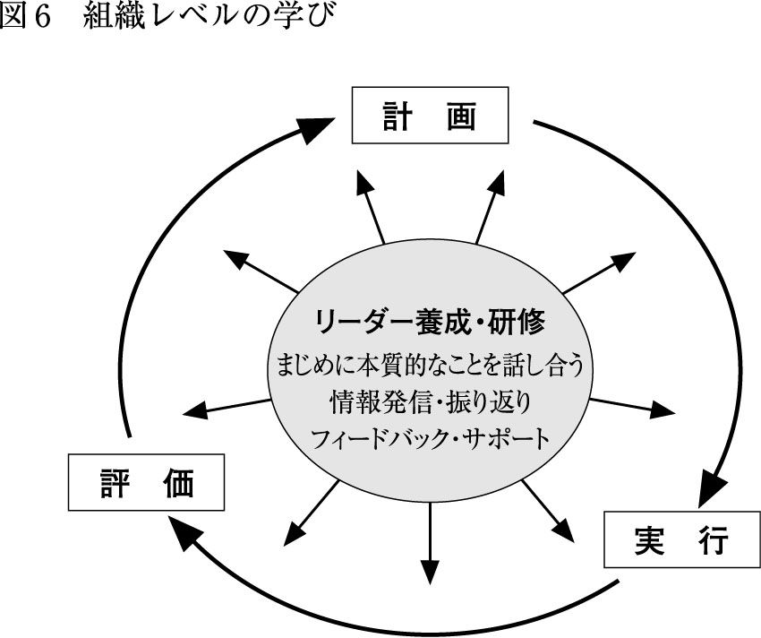

| 「学び」で組織は成長する | |
| 吉田 新一郎 | |
| (2006) | |
六、七年ほど前に私は拙著『会議の技法』（中公新書）のなかで、多くの組織が、
⑴コミュニケーションがうまくとれない
⑵上から降りてくるものしか実行できない
⑶こなすだけで精一杯
⑷考えない人が多すぎる
⑸チームとして機能していない
などの問題を共通に抱えていることを指摘しました。本のテーマに「会議」を選んだのは、会議のなかには組織が抱えているこれらの問題が凝縮した形で表れていると気づいたからです。会議の良し悪しは、組織自体の良し悪し（＝組織が元気か元気でないか）のバロメーターといえるのです。そこで、この五つの問題を解決する方法として、会議を改善する方法について書きました。
その後、会議やファシリテーション関係の本も急増していますが、先に掲げた問題も、会議の状況も一向に改善される気配はありません。それどころか、組織の抱える問題は一層深刻化しているとさえいえるかもしれません。
なぜ、このような状況が続いてしまうのかを考えると、先ほどのリストに、新たに、
⑹学んでいる人が少ない
という項目を加える必要があるのではないかと思います。
いってみれば、組織のなかに学びがない状態が、先に掲げた⑴から⑸の問題を引き起こしている原因なのではないかと思いいたりました。
日本には、「学びのプロ」がいないのです。人事担当者も「学び」について理解していないため、効率的な研修プログラムや日々の業務のなかで行われる個人の学びについて指導することができていません。そして、組織のなかで個人が学びの必要性にうすうす気づいていても、組織が従来型のピラミッド型の組織であるために、うまく学ぶことが妨げられているため、学びたくてもまったく学べない状態が続いていくことになってしまいます。
私は、一九八〇年代の前半から、企業や自治体やＮＧＯなどを対象に研修をする機会を多くもっていました。そのなかで、こんなことをいくら続けても受講者の力量アップにはならないし、ましてや組織のパワー・アップにもつながらない、というような研修にたくさん出合いました。
今日でも多くの組織は、研修をイベントの形でしか実施していないため、学びはほとんど機能していません。圧倒的多数の講師は、研修といえば、ただ話をするだけ、聞くだけの講義形式しか知りませんから、研修は単に実施する側が「実績」を主張するためだけのものにとどまっていたり、参加する者にとっては「やらされる」「役に立たない」「身につかない」といったイメージがつきまとうものになっています。だから、個人のレベルでの勉強や資質向上も停滞（下降？）してしまいます。そんな状況を変えたい、もっとこうすれば、組織に効率的な学びが生まれるのに、と感じていました。
この本の企画は、一九九〇年に出版されたピーター・センギーのThe Fifth Discipline（日本語訳の『最強組織の法則』ピーター・センゲ著は全訳ではない）と、ロランド・バースのImproving Schools from Within（学校を内側から変える）を読んで以来、考え続けてきたことでもあります。両方とも、「学習する組織」がテーマの本です（バースの場合は対象が学校なので、「組織」とはいわずに「コミュニティ」を使っていますが）。
日本でも二十一世紀に入ったころから、「学習する組織」についての本は結構出版されていますが、学習方法がまだ具体的に提示されていないので、学習する組織になりたくても、なれない状況が続いています。
そこで本書は、過去七、八年にわたり私が集めてきた五十以上の方法のなかから、企業、行政、学校、ＰＴＡ、ＮＰＯ（非営利組織）などあらゆる組織で使えるものを二十二に絞り込み、「主体的に取り組め」「役に立ち」「身につく」学ぶためのすべを、①一人で、②二人で、③チームで、そして④組織レベルで、という取り組みやすい分類にして紹介します。しかも、シンドク学ぶのではなく、楽しく学ぶ方法で。
自分を磨きたいと思っている方には、「これなら自分でもできる」「これなら試してみたい」、部下の資質向上のニーズは感じていても、その方法が分からない上司や、組織全体のレベルアップの必要性を感じているトップには、「これなら部下にやらせたい」「部下と一緒に取り組んでみたい」、研修担当者には、「これなら、これまでの研修の悪いイメージを払拭できるし、仕事に生かせる」と思っていただけるように書きました。
さらに社会教育関係者には、従来のイベント型のプログラムや、講師主導のプログラムにとって代わる多様な方法を紹介しています。また、学校や大学関係者には、自分たちの研修に活用することはもちろんですが、生徒や学生対象の授業を、より主体的な学びのあるものにするための方法としても効果的ですから、ぜひ応用する形で取り入れていただきたいと思います。
自分を絶えず磨き続けるために、そして「学び続ける組織やコミュニティ」をつくり出すために、少しでもお役に立てれば幸いです。
なぜ人は学ぶのか
「学び」が必要なのはいったい誰か？
「すべての人」である。学びに終着点などないのだから。
すでにかなり学べている人にとってさえ、まだ出合えていない形態の違う学びや、より効果的な学びや効率的な学び、さらにはもっとワクワクできる学びがあるはずである。
そして、まだよく学べていない人や、学ぶこと自体を楽しめていない人や、自分は学びを卒業してしまったと思い込んでいる人にとっては、何よりもワクワクする学びの体験、自分や仕事が変わりつつあることを実感できるような学びの体験をすることが最初のステップであり、それがまた次の学びへとつながっていく。いわば、学びは終わることなく続いていくのである。
では、そもそも、なぜ学ぶ必要があるのか？
大局的には、変化のスピードが加速度的に速まっているからである。それは特に、科学技術の高度化、情報化・グローバル化、少子・高齢化、産業構造の変化等、社会・経済の分野で著しい。変化の遅い社会においては、同じことの繰り返しでも許されたが、確実なのは変化の速さだけといわれるような今の社会においては、その変化以上のスピードで学び続けないと、いろいろな意味で置き去りにされるだけである。
では、経済や企業の現場に比べて一見止まったように見える政治、行政、学校などでは学ばなくていいのかというと、そんなことはない。これらの分野においても、これからはサービスを提供する対象を明確に位置づけた上で、長年の習慣になってしまっている主従関係の逆転も実現しなければ、サービスを提供する側とされる側両者のギャップは益々広がる一方であり、すでに近い将来見放されてしまってもおかしくない状況にある。
このような状況から脱する唯一の方法は、対象や周りの人間、組織全体を巻き込んだ学びしかないだろう。そのことに気づいて学ぶ人と、学ばない人との差は、どんどん大きく開いていく一方である。
では具体的に、組織で行われる学びとはどういったものであるべきなのだろうか。
組織の抱える問題について「はじめに」で⑴から⑸の項目を挙げたが、それらを解消するための具体的な学びの到達点を示すと、次のような項目が、学びの目標として挙げられることが分かる。（コラム１ 一つの学びからはたくさんの成果が得られるへ戻る）
・気づき
・知識やスキルの獲得
・仕事上での練習
・振り返り
・問題発掘・解決
・プロジェクトの発掘・成功／結果を出す
・昇進や転職
・学習組織の構築
これらの項目の一つひとつについて、それぞれの個人や組織に必要なことを考え、問題に取り組み、達成・成功を手に入れていくことが、学びであるのだ。（コラム１ 一つの学びからはたくさんの成果が得られるへ戻る）
あなたの組織はどれだけ学べているか？
しかし、先程から述べているように、組織における学びのレベルはとても低いものである。
日本には「人は石垣」の言葉があるように、人材の大切さは古くからいわれてきている。しかし、それが企業を含めたあらゆる組織で実践されているかというと、はなはだ疑問である。資金の運用や投資、新しい技術の導入には熱心な役員や管理職たちも、社員のベストのパフォーマンスを引き出すためにいったいどれだけの努力をしているだろうか。
それは、社員を長時間働かせたり、ノルマを達成させたり、人事異動や組織替えをしたり、さらには人事評価をしたりすることなどと勘違いされがちで、そのような仕組みが組織を成長させるためにあるのだと思い込んでいるトップや人事担当者が多いが、それは根本的に違う。また、そのような基準で努力をした個人にとっても、昇進や昇給ですら達成できるものではない。学びのリーダーの仕事とは、社員たちのなかに眠ったままでいる潜在的な力に気づかせ、それを使いこなせるように支援することである。
また、社員一人ひとりの潜在的な力を目覚めさせ、そして発揮させる責任は、役員や管理職などの会社側のみにあるかといえば、そうではない。社員一人ひとりの側の問題でもある。
「自分は、何をしたいのか」「自分は、何を実現したいのか」「自分は、何をもって記憶されたいのか」は、それぞれ一人ひとりの思いや考えに根ざしているからである。そしてそれが、ある程度は会社側のねらいや思惑は踏まえながらも、基本的に何を学ぶかを決定づけることになる。いってみれば、組織のリーダーと個人、それぞれが協力し、学ぶ方法を身につけて初めて、学びは実のあるものになるといえる。
学びに必要な三つの要素
この、組織のリーダーの導き、個人のやる気、そして学びの方法は、組織における学びを実現する上で不可欠な「学びの三要素」ということができる（図１参照）。これまで、多くの組織では、この三要素のどれか、あるいは全部が欠けていたため、学びを実現することができなかった。
学びには、
⑴個々人の関心、こだわり、夢、思い、ビジョンや抱える課題（内容）
⑵学びの主体である一人ひとりの社員がおかれている状況や環境
⑶学びをつくり出す具体的で多様な方法
が必要なのである。
それぞれについて詳しく見ていこう。
まず、⑴個々人の関心、こだわり、夢、思い、ビジョンや抱える課題、について。
これこそが「学び」の原動力である。
また、組織のビジョンや目標や課題などを踏まえながらも、組織を構成する一人ひとりの社員が興味・関心のあること、これだけはやり遂げたい、あるいは乗り越えたいと思っていることなどが学ぶ中身を決定づけることになる。
学ぶ中身は、
・おもしろいと思える
・やりがいがあり、熱中できる
・役立つし、仕事に生かせる
・常日頃おろそかにされがちな振り返りを当たり前のものにしてくれる
・自分の成長が感じられる（自己実現を可能にしてくれる）
・もっと学べることも含めて、自分の可能性に気づける
・プロセスで他者との関わりがあり、楽しい
といったことによって、選択されることになるのだ。
次に、⑵学びの主体である一人ひとりの社員がおかれている状況や環境、について。
ここでいう「環境」は、「会社そのもの」といい換えてもいいくらいである。「アメ」や「ムチ」も含めたトータルな意味での会社の文化やシステムであり、特に会社内に存在するリーダーシップと資源が、社員の学びを決定づける要素になる。
しかし、個々のリーダーや資源に関しては、社員一人ひとりが影響力をもっているわけではないので、組織のトップである役員や幹部はいまある状況や環境が「学び」に寄与しているのか、それとも妨げているのかを洗い直して、「学習する組織」に相応しい仕組みに切り替えていく役割を担う必要がある。そうしないと、個々のやる気のある社員がつくり出す「学び」を、組織全体の学びへと広げることはできない。
リーダーシップについては、第五章で詳しく説明するが、学校の校長を題材にして新しいリーダーのあり方を提示した『校長先生という仕事』（平凡社新書）のパート３で、リーダーとマネジャー（管理者）の違いを明らかにした上で（表１を参照してもらえばよいが、学びに必要とされているのは、この「リーダー」の役割であって「マネジャー」の役割ではない）、①管理、②ビジョン、③変化、④関係、⑤学び、⑥自分という六つのリーダーシップの枠組みを使って、これからのリーダーに求められる様々な役割や機能について詳しく解説しているので、そちらも参照していただきたい。
資源とは、主に時間とお金を指す。
この本で紹介する方法はお金を必要とするものは多くないが、時間はかかる。しかし、これまでのお世辞にも役に立つとはいえない研修と違って、ここで紹介する方法はすべて仕事と直結しているものばかりである。その意味では、学ぶ時間を割かないで同じことを繰り返しやり続けるよりは、少し多めの時間を使っても、確実に学んで常に改善していった方が組織にとっては断然いい。
しかし、これらがそろえば「学び」は実現するわけではない。個人がもっている関心や夢や思いを、おかれている状況や環境のなかで実現するためには、多様な「学び」の方法が欠かせない。
これが⑶学びをつくり出す具体的で多様な方法、である。
これはいい換えれば、会社や役所や学校やＮＰＯなどのあらゆる組織や地域社会が「学習する組織（ないし、コミュニティ）」になっていくための具体的な方法であり、まさに、この本のテーマになっている。
「はじめに」で紹介したセンギーの本などでも、チーム学習、対話、コラボレーション（協力してつくり出すこと）、振り返りなどが大切だとは教えてくれているが、具体的な方法は何も提示してくれていない。
私たちは、研修というとバラバラに集められた個人を全体として捉えて行うものと思い込んでいる。学校の授業も同じである。しかし、私は十年以上前からそのアプローチに疑問を感じてしまった。その方法がそれほど効果的ではないにもかかわらず、あたかもそれしかないが如く行われている（詳しくは、拙著『効果10倍の〈教える〉技術』（ＰＨＰ新書）を参照されたい）。
人は抱える課題も、動機も、夢も、さらには学び方や学ぶスピードも様々であるから、多様な方法で学べるようにするのがいい。それなのに、これまではあまりにも方法が画一化されすぎていたのだ。あるいは、学ぶ方法について無頓着でありすぎていた、といった方がいいかもしれない。そのことが、学びの質や量を極めて低いレベルに抑えてきた。
学校教育や社会教育で行われている学習方法も、組織で行われている学びと類似していることを考えると、これらはすべて根底の部分でつながり合っているというか、影響し合っているのであろう（ここで紹介する方法は、単に組織で使える学びの方法というのではなく、学校教育や社会教育でも効果的に使えるものがほとんどである）。
それぞれに合った学びを
表２は、本書で紹介している二十二の方法を様々な切り口で分類してみたものである。方法を選ぶ際の参考にしていただければと思う。大切にすべきは、学ぶ側の主体的な選択であるが、学ばせる側も学ぶ側に適したものを選んで提案できればよい。

多くの方法が表に掲載した九つのねらいのかなりの部分を同時に満たすものではあるが、印をつけたのはそれに「特に」該当するもののみである。なお、従来の研修と違って、ここで紹介している方法のほとんどは継続的に行われるものなので、ねらいはほぼ確実に達成されると思って間違いない。
さらに、従来の研修では、主に聞くことが中心であり、若干は見ることや書くこともあったかもしれないが、すべて「受身的」である。それに対して、ここで紹介している方法のすべては「主体的」に書いたり、聞いたり、見たり、動いたり、読んだり、話したりすることで学んでいる。
本書で、多様な学びを、一人で、二人で、チームで、そして組織レベルでという区分で分けたのは、私自身が自分の研修を行う際に、そうした多様なレベルで考えたり、話し合ったりする時間をバランスよく設けることによって積極的な参加が得られるだけでなく、学びの質・量ともに格段に高まることを経験を通して分かっていたからである。
さらには、従来の研修に代わる・つけ加えるものとして、多様なメニューを一人、二人、チーム、そして組織レベルでやれるものとして提示することで、極めて取り組みやすくなると思ったからである。「自分がやってみたい」あるいは「これなら導入しやすい」と思ったものから始めていただければいい。
次の章から、具体的な学びの方法を紹介していく。より具体的なイメージをもってもらうために、各学びの方法を紹介するはじめの部分に、「学ぶ人たち」の実例を紹介した。彼らは、自ら、あるいは周りの情報から学びの必要性を見出し、学びの方法を工夫し、自分やパートナー、チーム、組織の状態を高めることに成功した。それらも参考に、自らの理想の学びに近いものを見つけ、実践に結びつけてほしい。
また、一つの学びはそれだけで完結しているものではない。たくさんの学びがそれぞれ関連しているので、節の最後にはその学びに結びつく他の学びの方法がどれなのかも紹介した。適宜、参照してもらいたい。
本章で紹介する六つの「一人で学ぶ」方法は、「自分のニーズや目標を明確にする」「通常とは異なる立場に自分をおいたり、異なる視点から自分を見たりする」「新しい情報や考え方やアプローチや人々に出合う」ことなどを通して、「自分自身の成長のために」学ぶという共通する特徴をもつ。
一見、新人や、新たな部署に配属された人や、新しい仕事を学ぶ人のための方法であり、学びの第一段階と捉えられがちだが、プロの仕事人であり続けたいと思っている人たちにもぜひ取り組んでもらいたい方法だ。いずれにしても、ベースには、好奇心、批判精神、前向きな姿勢などが大切である。
なお、これらの方法を通して学んだこと（＝おもしろい情報や考え方やアプローチや学びの過程で知り合った人々）は、身近にいる人たちを中心に他の人々にぜひ知ってもらいたくなるものであり、また、学ぶことで次の学びも見つかるから、それが第二章以降の二人で、チームで、組織全体で学ぶ際の根幹をなすものにもなる。
埼玉県で公立小学校の先生をしている岩瀬さんは、二年ほど前から自分のホームページ（以下、ＨＰ）上で日記を公開している。
岩瀬さんは、教師になって五年くらいはあるサークルに参加していたので、毎月レポートを提出することで自分の仕事を振り返る習慣があったが、そのサークルから足が遠のくようになって、書くことをしなくなってしまった。そこで日記を書くことで「自分の実践の振り返り」をもう一度しようと考えて始めたのがそもそものきっかけである。（６ サバティカル 外の広い世界を知るへ戻る）（フィードバックするコツへ戻る）（組織によるサポートの仕方へ戻る）
「自分の実践の振り返り」として、たとえば、「読み」「書き」のワークショップを国語の授業で導入し始めた記録の後には、「ボク自身がどのようにグループに関わったらよいか（たとえばディスカッションが行き詰まっているグループにどのように『質問』するか、どういう視点をもって観察するか）、などを課題として感じています。またあるグループは、『脱線』が多く（悪ふざけに近い）、これからどうするかという課題もあります。しかし、全体として、とても手応えを感じています。『早く続き読みたいー！』『いやー、今日話し合い盛り上がったよねー！』なんていう声も聞こえてきました。何より、クラスではシャイだと感じていた子たちが、ディスカッションに積極的に参加しているのを見て、本当に嬉しく思いました」と書いている。
約一ヶ月間、チーム学習に力を入れてやってきたので、その集大成の一つとして、子どもたちに「グループでの学習に大切なこと」を出させて、まとめた記録も掲載されている。子どもたちが考えたのは「ベストをつくす＝あきらめない！／役割を決める（リーダー、記録、チアリーダー、時間係など）／はげます／全員参加／協力し合う、教え合う＝チームワーク／いつも楽しく／よく聞く！／助ける／一緒にゴールを目指す！／集中力／自信をもつ／責めない／人の意見を大切にする／信頼する／自分の考えを恥ずかしがらずにいう／『分からないので教えて』という／話し合う／振り返る」と、大人顔負けの項目が並んでいる。岩瀬さんは、これに対して、「なかなかよい共有になったなあと思います」とコメントしている。
「校庭で大の字！」というタイトルでは、「今日は久しぶりに朝からいいお天気！ 外にいるとそれだけでうれしくなるような快晴でした。こんないい天気の日に教室で勉強しているんじゃもったいない！ 六年生が修学旅行中で、校庭も人がいなくてシーンとしている。こんなチャンスはない！ ということで、一時間目は急遽、青空の下での国語「読書」の時間にしました。吹き渡る風がとても気持ちがいいです。そのなかで思い思いの場所で三十分読書をしました。
ボクも校庭で一緒に読書。途中からグラウンドに大の字に寝っ転がってみると、信じられないくらい空がきれい！ トンボも空を舞っています。『おーい！ 寝っ転がってみなよー！ 気持ちいいぞー！』とさそうと、あっというまにみんなで大の字！
『せっかくだからみんなででかい文字作ろうよー。先生も一緒にやろう！』
『いいねー！ なんて文字にする？』
『やっぱ、〈大〉でしょ！』
最後は、みんなで校庭で文字通り『大の字』になりました。
『先生！ 三階に走っていって、写真とってよー！』
人使いの荒い子ども達だなあ...」と書かれている。
ほほえましい風景が目に浮かぶようだ。ちゃんと、その写真つきで掲載されていた。
しかし、自分の仕事を振り返るだけなら、非公開の通常の日記で十分かもしれない。それを公開のＨＰにしたのは「同僚との情報の共有」と「外とのつながり」という二つのねらいもあったからである。
「同僚との情報の共有」ということでは、かつて、あるおもしろい他校の実践を自分の学校でも取り組めないかと、そのレポートを配ったのだが読んでももらえず、逆に嫌みにとられたことがあった。そこでＨＰで日記風に気楽な感じで書き留めて、同僚にそれとなくＨＰの存在を知らせれば興味をもった人が読んでくれ、それをきっかけに実践の話ができるのではないかと思った。
すると、岩瀬さんの願い通り、同僚四人くらいは常時読みに来てくれるようになり、それをきっかけに実践の話をしたり、クラスで実践してくれたり、職場で「自主研修」としてワークショップをしたり（八人参加）などの広がりが出てきた。うち二名はよく書き込みもしてくれるという。
「外とのつながり」に関しては、ネットで検索して自分のＨＰを見てくれる人がいればそれを契機につながりをもつことができるのではないかと考えた。現在は一日に百件くらいのヒットがあり、実践に関する質問のメールも時々来るそうだ。
主なつながりとしては、①日記を読んで「子どもを楽しませよう！という姿勢が強すぎるのが気になる。もっと個々の子どもたちを丹念に追って、学びの成立を心がけた方がよいのではないか」と厳しい指摘をしてくれた長年保育士を務めて大学院に戻った人、②まずは大人がワークショップを通じてよい学びを体験することが先決ということで意気投合した、日記を介して知り合った社会人や、教師を目指して教員採用試験を受験準備中の人たち、③ＨＰを見て興味をもってくれ、校内研修に講師として呼んでくれる人たち、そして④ＨＰに収録したある学校の実践紹介を見て、本の執筆を提案してくれた人など、多様な人たちが含まれる。
ジャーナルで自分の状態を知る――自分に何が足りないか？
ここで紹介した「同僚との情報の共有」と「外とのつながり」は、あくまでもＨＰ上にある「自分の実践の振り返り」の副産物である。「自分の実践の振り返り」の中身がよくないと、紹介したような結果は生まれない。その意味で、日々学校で起こったことを淡々と書くだけではダメである。
たまたま読んだ人が書き込みをしたり、執筆者にメールを送るのは、ＨＰの内容に共感したり、強いインパクトを受けたり、学び続けていることが感じられたり、ありがたい情報が発信されていたりするからである。要するに、ＨＰに書かれている「自分の実践（や体験）の振り返り」の〝質〟次第ということになる。
ジャーナル（日誌）は、書き手が自分の体験していることについて、個人的な反応、疑問、気持ち、考え、知識などを記録するものをさす。頭の中ではやっているのかもしれないが、常日頃忙しくてできない、自分の体験していることを振り返ったり、分析したりという作業を自分の言葉で表すことでより意味をもたせ、より確実に自分のものにすることができる。同僚や他の人たちとの共有やつながりは、あくまでも二義的なことである。
ジャーナルは以下のようなことを可能にしてくれるので、極めて強力なツールである。
・自分の反応、考え、分析などを記録できる
・自分の進化（あるいは退化？）を記録できる
・振り返りの視点で起こったことを記録できる
・他の人に紹介したり、自分で使ったりするために観察や価値ある情報を記録できる
・情報を分析したり、組み立てたり、まとめたりする
・いろいろなアイディアを出してみる
・新しいアイディアや情報や概念を探求する
・新しいアイディアや情報に反応する
・自分なりの意味をつくり出す
・仮説を立て、検証してみる
・可能な選択肢や気持ち、行動（計画）や行動による影響などを自分のなかで検討する
・結果を予測し、事前の予想を確認したり、変更したりする
・考え、視点、信じていることなどを明確にする
・疑問（質問）を投げかけたり、疑問に答えたりする
・問題解決のシミュレーションをする
・すでに知っていることと学んでいることを関連づける
・体験や考えたことや学んだことを振り返る
・出来事や学んだことを批判的、創造的に考える
・自分の部署のパフォーマンスを評価する
これだけの多様な目的が達成されるだけでなく、ジャーナルは学びの方法として極めて柔軟な方法であることが最大の特徴として挙げられる。ジャーナルは、ノートを使うこともできるし、パソコンを使うこともできる。また非公開で一人でもできるし、岩瀬さんのように公開してフィードバックを得る形でもできる。さらに、扱うテーマの制限もない。
まずは始めてみよう
ジャーナルを書くからといって、かしこまってしまう人がいるが、その必要はない。メールで簡単なメッセージを送るような要領で書けばいい。停滞あるいは退化しないためには、「いろいろ試してみよう」という姿勢が大切である。また、絶えず新しいアイディアや情報やものの見方に自分が敏感になり、それを取り入れていくこともお忘れなく。
書き方も定式化したものなどはなく、自分の言葉で表すことが大切なので、
・事実を詳しく
・分析的に
・説明的な文章で
・深く探求する形で
・創造的に
・質問（質疑応答）形式で
・体験の前、間、後に
・優先順位と計画
・何の制約も設けずに
など、必要な情報や内容に応じて自由な形で書くことが可能である。
また、長い文章を書く必要もなく、
・概念図
・フローチャート
・絵やイラスト
・シンボル
・表や図
・マンガ
なども文字と同じか、それ以上に考えを表すのには効果的な手段なので、ぜひ使ってみることをお勧めする。
体験を振り返る際に役立つ手順としては、①体験の要約（何が、どう起こり、誰が関わっていたのかなどを書く）、②分析（自分はそのことをどう分析したのか、どう思ったのか？ 可能なら他の人の視点から書く）、③教訓（体験と、それに基づく分析等から学んだことを書く）、④計画（体験が今後のアクションに役立つことをまとめる）の「四段階」を参考にしていただければいいと思う。
ジャーナルをＨＰで公開するときの留意点としては、公開しているがゆえに書けなくなってしまうことも多く出てくることだ。岩瀬さんも、「実践の振り返りとしてはＨＰはなかなか難しい」と思っている。そして、「その点ではずっとジレンマを抱えています。何度も止めようと思いました。しかし振り返り以外の目的もあるので、続けてきました。書けなくても、書いている過程で振り返ることは多々あり、それは手帳等にメモするなどしてきました。そんなふうに毎日行ってきたことに意味があったと思っています」ともいっている。要するに、書くべきこと、書かないほうがよいことなど、目的に応じて適切な手段を選べばよい。
ジャーナルと関連する学びの方法としては、メールの交換、メーリングリストなどがある。
他に、お役立ち情報紙（ニュースレター）と週刊ジャーナルも関連しているので参考にしてほしい。
資料としては、『「考える力」はこうしてつける』（ジェニ・ウィルソン他著、新評論、二〇〇四年）と『ペアレント・プロジェクト』（ジェイムズ・ボパット著、新評論、二〇〇二年）がある。それぞれ一つの章をジャーナルに割いている。
これまで大手メーカーの販売部門を中心に歩んできた内海さんは、どういうわけか予想もしていなかった企画開発部門へ異動した。本人が希望を出したわけではない。顧客により近いところで仕事をしている販売サイドの人間の知識やノウハウを企画開発に生かそうという、会社の方針を反映した人事らしい。
しかし、内海さんにとって、企画開発の仕事ははじめてだし、どのように仕事をしていいのかさっぱり分からない。
そこで、販売に最初に配属された当時、先輩セールスマンの後を数日間ひたすらつかせてもらって、アポの取り方から、訪問の仕方、接し方や話し方、そしてフォローアップの仕方までいろいろ観察させてもらったことを思い出し、上司に同じようなことが企画開発でもやらせてもらえないか頼んでみた。
上司は、そんなこと企画開発ではやったことないと、最初は乗り気ではなかったが、上司と同期の販売部門の先輩にその効果を説得してもらって、ようやくやらせてもらえることになった。
結果的に、先輩が三年かかって築き上げたことのかなりの部分をわずか一日で盗めてしまった。もちろん、いいところはそのままもらえばいいし、好ましくないと思ったところは反面教師にすればいい。想像していただけだったことも、観察やインタビューを通して確認できた。（コーチングの応用へ戻る）（組織によるサポートの仕方へ戻る）
「素人の目」で観察する
この、主に販売部門では当たり前のように長年行われてきた、先輩の後をひたすらつけさせてもらって観察しながら学ぶ方法を、日本語では何というのか？ 英語では「シャドーイング」という。意訳すると、「影になって学ぶ」だ。
実は、この方法は徒弟制度を色濃く残している分野ではいまでも主要な研修方法であり、親方から弟子に技を引き継いでいく方法として存在し続けている。親方は口で説明することはほとんどなく、弟子は親方のしていることを傍らで観察しながら身につけていく。この方法の有効性は長年の伝統ですでに証明済みといえるかもしれない。
この手法の特徴および効果は何といっても、観察される側の発言や行動、場合によっては感情までもを、じっくり観察することを通して学べることである。
さらに、効果は観察する側だけにとどまらない。弟子に技を伝授する「完璧な」親方には見られることによって得るものというのはないかもしれないが、一般的には、観察される側も、普通に自分だけで仕事をしているときに比べて、得るものがある。まず、少しでもよく見せようとするから、準備をしたり、気をつけて事に当たったりする。それは、当然、常日頃努力をし続けることの大切さも気づかせてくれることになる。なかなか、シャドーイングをされるときだけがんばって、ごまかせるものではないからだ。見られる立場になることで自信がつく人もいる。
また、後で詳しく紹介するが、シャドーイングは影になることで「ひたすらおとなしく」観察するだけではない。その仕事の背景や根拠になっているようなものをよりよく理解するために、インタビューもさせてもらう。観察される側は、これらの質問をされることからも気づかされたり、学ばされたりする部分も多分にある。
さらに、シャドーイングに組織として取り組む場合、組織内でどう位置づけるかということにもよるが、観察の対象になった人たちに何らかのフィードバックをすることは、極めて価値があることだ。しかし、この場合、直接、観察させてもらった者が観察の対象になった人に気がついたことや提案などを述べることは難しいし、ともすれば関係を悪くする危険さえ伴うから、第三者を介して（その場合も、同じような複数の報告があった場合に限り、誰が誰を対象にいったことなのかを分からないようにした上で）、伝えるなどの配慮が必要になる。
少なくとも、組織にとって「素人の目」というか「毒されていない純粋な目」を大切にすることは、価値ある情報を生み出し、そして組織の改善に活用していく一つの効果的なアプローチといえる。
観察前と観察後が大切
以上、シャドーイングされる側にとっての効果について言及してきたが、する側に話を戻す。する側にとって大切なのは、観察している間に五感を研ぎ澄ませて集中するということはいうまでもないが、観察する前（＝準備）とした後（＝振り返りと自分のアクション・プランづくり）に、観察している間と同じくらいか、それ以上のエネルギーを割くということだ。
以下にシャドーイングの手順をまとめておこう。
〈準備〉
シャドーイングはただ観察をすればいいというものではなく、その仕事やその背景にある組織全体のことについていろいろ知っていればいるほど見る視点も確かなものになる。たとえ、同じ組織の人の後をつかせてもらう場合でも、外部の者が観察する気分で客観的に準備をし、かつ観察をする心構えが重要だ。
もう一つ大切なのは、準備段階で観察の「ねらい」を明確にしておくこと。つまり、何を学びたいのか、何を達成したいのかを十分考えておくことだ。それがはっきりすれば、準備としてやらなければいけないこと、観察中にしなければいけないこと、観察終了後にしなければいけないことなども明確になる。
準備段階でしなければならないことには、被観察者へのインタビュー項目を事前につくることなども含まれる。一日（あるいは、半日ないし二日間）の観察で把握できることには自ずと限界があるから、観察で見えてこないと分かっていることは、当然インタビュー等で補う必要がある。
〈観察〉
観察中は、見たことや聞いたことなどの事実を克明に記録に取る。感じたことなどの印象は、記録しなくとも頭に残りやすいから、観察が終わってからノートを振り返るときまでとっておいてもほとんどの場合大丈夫だが、観察途中で気づいた、後で質問したいことなどは忘れやすいので、書き出しておいた方がいい。事実として見えたり、聞こえたりしない部分に関しては、インタビューをする。
〈振り返りと計画づくり〉
シャドーイングは何のためにやるかといえば、「自分の仕事をよくするため」ということになるから、観察を踏まえて具体的なアクション・プラン（計画）が描けなければならない。つまり、今後何をどのようにしていけばいいのかのイメージがつくようにしなければいけない、ということだ。そのためには、観察の克明な振り返りをし、観察を自分のものにする必要がある。不明確な部分については、ここで改めて被観察者にフォローアップのインタビューをする。
それぞれの人が個別にシャドーイングをする場合は、シャドーイングをした者が自分なりに役立てていけばそれでいいわけだが、組織的に取り組む場合（全体の研修などで行う場合）には、シャドーイングをした者をサポートし続けたり、シャドーイングされた者へのフィードバックをしたり、組織の改善に生かしたり、といったステップがここに入る。
シャドーイングの応用
シャドーイングに関連する学びには、観察（シャドーイングのように計画・振り返りを伴うものでなくとも、単なる観察だけをすることによって得られるものもかなりある。職場の先輩や他の社員の様子を観察することによって、仕事の仕方のいいところは盗み、悪いと思ったところは反面教師にすればいい。もちろん、サービスの対象である顧客をシャドーイングしてみるのも効果的）と他社訪問などがある。
前出の『校長先生という仕事』は、シャドーイングの手法を使って書いた本であり、参考にしてもらいたい。実際に、シャドーイングをする前に考えたインタビュー項目は表３の通りだ。これらはいずれも、後をつけるだけでは見えてこないが、校長先生の仕事を把握するには不可欠と思えた質問である。
表３ 校長にインタビューしたときの項目例
校長へのインタビューから明らかにしたいこと（観察は一日のみ）
１ 校長が学校の課題として位置づけていることは何か？ それに対して、どの程度までアプローチできているか？ 妨げになっているものは何か？
２ 学校で自分が自慢できると思っていることは何か？
３ 校長になってから達成したことには、どのようなものがあるか？
４ 自分の役割／立場をどのように捉えているか？
５ 校長の仕事（役割）として、何が大切だと思っているか？ 実際、どれだけやれていると思っているか？ ――理想としての、校長の仕事は何か？
６ 学校における諸決定のメカニズムはどうなっているのか？
７ 教員との関係で特にしていること、いいたいこと、今後の課題は？
８ 保護者との関係で特にしていること、いいたいこと、今後の課題は？
９ 地域との関係で特にしていること、いいたいこと、今後の課題は？
10 教育委員会との関係で特にしていること、いいたいこと、今後の課題は？
11 校長になるための準備で一番役に立ったものは何か？
12 自分自身を磨くため／学校改善のための情報源や学びの機会は？
13 教員研修についてしていることは？
14 「プロ」として教師・校長に求められているものは何か？
15 リーダーが身につけておくべき資質とは何か？ それらはどうやって身につけられるか？
16 時間の割り振り（１週間の時間の使い方を100%にすると）は？
あるテレビ番組で大手スーパーを早期退職した人がおにぎり屋さんを始め、奥さんと二人三脚でがんばっている姿が紹介された。
夫は、最初から退職後の計画があって辞めたわけではない。しばらく家でごろごろしていた後で、やり始めたことである。奥さんも、最初から協力的だったわけではない。むしろ当初は、まったく関わるつもりがなかったくらいである。しかし、経営難と人手不足で倒産寸前の夫のお店を放っておくことができなくなり、しかたなく手伝い始めたのだ。
現在、店が軌道に乗っているのは、もちろん二人の長時間にわたる様々な努力があってこそではあるが、経営の立て直しの大きな原動力になったのは、奥さんが店に来るお客さんたちにそれとなく好みを聞いて、それを新しい製品開発に生かしていったことだ。ハンバーグを挟み込んだサンドイッチ感覚のおにぎりなど、ユニークな商品が話題になったようだ。
思い込みのサービスから抜け出す
商売や政治の世界では、お客さんや選挙民は「神様」という言葉があるくらいだが、実際に消費者・ユーザー・選挙民などの声を聞くことは意外と十分にしていない。同じことは役所にも、学校にも、ＮＰＯ（非営利組織）等にもいえる。
尋ねること自体をほとんどしないのであるから、いいサービスが提供される（政治も行われる）はずもない。ある意味では、生の声を聞くことはすべての原点であり、おにぎり屋の奥さんはそのことを知っていたわけである。
それは、独りよがりで、思い込みのサービスを提供し続けるのか（それをやり続けるだけでも十分すぎるくらいに忙しい）、それともお客やユーザーの声を生かしながら、お客に喜んでもらえるサービスを提供するのか（同じ忙しさでも、見返りのある忙しさになる）の分かれ目である。
もちろん、ものやサービスを提供されるお客やユーザーの多くは、自分たちが何を欲しているのかはっきり分かっているわけではない。しかし、お客やユーザーも尋ねられるプロセスのなかで求めているものが何なのかが明らかになることも往々にしてある。同じことは、ものやサービスを提供する側にもいえるのである。
これほどパワフルな手法をもっと日常的に使わない手はない。それが、このインタビューという方法である。
インタビューは、おにぎり屋の奥さんがしたように、インフォーマルに「それとなく」行う方法もあるし、フォーマルに質問項目をあらかじめ用意して、ある程度の数も確保するような形で行う方法もある。後で紹介するように、三‐五人くらいの人に集まってもらって行うグループ・インタビューもまた効果的である。目的、時間、対象、経費などと相談しながら、適切な方法を選ぶ必要がある。
なお、対象はお客やユーザーだけでなく、同僚を含めた組織内の人たちも考えられることを忘れてはならない。内部の人間も貴重な情報源だ。自分たち自身が使いたくない、買いたくないようなものやサービスが、広く受け入れられるわけがない！
本当に知りたいと思う気持ちが、すべての出発点である。その気持ちは、聞き方や聞く項目の選択に当然反映されるし、もちろん聞かれる側にも伝わってしまう。ということは、強い気持ちがない場合にこの手法を使ってしまうと、逆効果、つまり「この人は、本当に知りたいわけではないんだ」と、聞かれる側に思わせてしまうことになるから、意外と危険な方法でもある。
聞きたいことを聞き出すためには
おにぎり屋の奥さんがしていたようなインフォーマルなインタビューは、（他のお客がいないときに）「さりげない」会話のなかで、「それとなく」聞き出す方法である。お客には、インタビューをされているという意識はまったくない。
ここでは、フォーマルな場合の手順を紹介する。
⑴準備
・何を知りたいのか、誰に聞くのがいいのか、何人ぐらい必要か、いつ、どこでインタビューするのがいいのかを決める。
・どんな質問をするか考える――二十‐三十枚の紙片（Ａ４を八つに切ったトランプのカードぐらいの紙）を用意し、ブレーン・ストーミングの要領で、できるだけたくさんの多様な質問を書き出していく。「はい」か「いいえ」で答えられる質問は避ける。できるだけ、「生の声」を、自分の言葉で表現してもらった方がいい。
・五‐六つの質問を選ぶ。――書き出した紙片を整理し、重複するものは一緒にしながら、ぜひ聞きたい質問を五‐六つぐらいに絞り込む。そして、大切な順番に並べておけば、インタビューする際に役に立つ（それは、実際に聞く順番とは一致しない場合もある）。
⑵実際にインタビューする
・このとき、誰がインタビューするのか、答えはどうやって記録するのかはあらかじめ決めておく。
⑶インタビューの結果分析と結果の共有
・結果を整理・分析し、提案等をまとめる。結果は、簡潔にレポートにまとめて関係者と共有し、事業に反映する。なお、インタビューの振り返りもしっかり行い、よかった点、悪かった点、今後への提言もレポートにつけ加えるようにするといい。
インタビューのよさは、それがインフォーマルであれ、フォーマルであれ、相互のやりとりによって何かを生み出すものであることだ。従って、目的を達成する（聞きたいことを聞き出す）ために柔軟に対応することが、何よりも肝要になる。それが抜け落ちてしまうと、相互のやりとりがない質問用紙に記入してもらうアンケートと同じになってしまう。
ここでは一人を対象に行うインタビューを取り上げたが、応用として、グループ・インタビューの方法がある。
三‐五人ぐらいを対象に行うグループ・インタビューは、個別に行う場合と比べて、インタビューされる側相互のアイディアの相乗効果が生まれたり、時間が短縮されたりなどのメリットがある。ただし、せっかく集まってもらったのに、一人ないし二人の発言が場を独占してしまい、多様な意見が出にくいこともあるので、インタビューの対象の人選と進行役の力量（多様な意見を尊重して発言しやすくする能力、適切な質問を選択して問いかける能力など）には注意をする必要がある。
販売部に所属している伊藤さんの食品会社では、三年ほど前から「自己開発計画」を導入している。それまでは、昇格や賞与に反映させるための人事評価しか行っていなかった。それは販売部の場合、全体の収益目標が設定されたものを、個人毎の収益目標にブレークダウンし、その達成率を基準にしながら、コミュニケーション能力やリーダーシップ等の能力評価も加味しながら行うものである。
しかしこの制度は、バブル崩壊後に、人件費を削減することを主な目的としていた。ただ一律削減してしまっては社員のやる気をそいでしまうので、組織の収益増に貢献した社員には昇格や賞与にその対価を反映させ、やる気のある社員のモチベーションを継続させることで、組織全体のディパワーを防ぐ（＝やる気を維持する）効果をもたせたのだ。
その目的は達成され、伊藤さんも含めて多くの社員に人事評価とはこんなもんだろうと受け入れられつつあったとき、組合側と会社の人事担当で話し合いがもたれた。収益目標という定量化された数値目標と、実際にはどう評価されているのかさっぱり分からない上司による能力評価では、何年やっても個々の社員の能力を開発することにはならない、ということで意見の一致をみたのである。
そこで登場したのが「自己開発計画」だった。
それは、たとえば伊藤さんの場合なら、自分が営業マンとして成長していくためには、この一年間どのような目標を設定し、それを実現するために自分ではどのようなことをし、上司や会社にはどのようなサポートを求めるのか、といったことを考えて、上司の合意を得た上で実行していくというものである。年度はじめの上司との話し合いの場では、その目標に対する評価基準も一緒に設定する。
それまで上司のみによって行われていた基準がよく分からない能力評価とはまったく異なるので、伊藤さんをはじめ他の社員の受けも非常にいい。なお実際の評価は、年度末に自己評価と上司の評価と二人の同僚の評価が、それぞれ三分の一ずつのウェートで行われる。
この形で評価を行うと、当初は自己評価が一番甘いのではと思われていたが、過去二年間の経験から確実にいえることは、本人の評価が一番厳しいということである。ほとんどの人は、「自分はもっとできる」と思っているからだ。そして、同僚の評価の方が甘く、上司の評価は中ぐらいという結果が出ている。これはもちろん、本人の評価が辛すぎるときは元気づけのために甘くしたり、本人や同僚の評価が過度に甘いと判断したときは辛めに評価するといったバランス感覚を上司たちがもっていることにもよる。
伊藤さんがもう一点評価しているのは、この方法が取り入れられてからは、従来から行われていた意味のない研修が少なくなり、社員が「自己開発計画」で掲げた目標を達成するのを助けるための研修が提供されるようになり始めていることである。（改善のための道筋へ戻る）
「評価」も学びである
これまで行われている人事評価と、申し訳程度に行われる研修では、社員の能力開発につながることは期待できない。ここで紹介している「自己開発計画」は、各社員が伸ばしたい能力を自ら設定することで、人事評価と研修を意味のあるものにするプロセスである。それは、人事評価も研修も、各社員の自己開発計画を踏まえた形で行われるものになるからである。四者の関係を図化すると、図２のようになり、まさに、Plan-Do-See（計画―実行―評価）の循環をつくり出している。
自己開発計画は、社員各自が仕事にまつわる何らかの側面を意図的に改善したり、さらに伸ばすことを意図して計画するが、会社全体のビジョンや自分が所属する部局の目標も踏まえる形で設定される。
もちろん、計画を立てる際には、それまでに自分が身につけたものを振り返ることが出発点になるし、自分のこれからのキャリアを見通して、いまどんな能力を身につけておくのがいいのかといったことを考えることにもなる。
目標を明確にすることがポイント
自己開発計画は、会社が導入しない限りできないものではない。たとえ、会社が要求しなくても、自分がプロ（仕事人）として絶えず成長していきたければ、自分だけでもやるべきである。そのくらいの気概がないと、たとえ制度としてやらされたとしても、十分に制度を生かせないかもしれないからである。何かを学んだり、獲得するには、主体性が限りなく大きなウェートを占めている。
自分で取り組む場合も、制度として取り組む場合も大切なことは、
・自分のニーズを明らかにする（自分の強みや弱みを知る）こと
・協力者を見つけること（誰かと一緒に助け合いながらやれた方が、楽だし、楽しい）
・SMART（スマート）な目標を設定すること
SpecificまたはStrategic―具体的、または戦略的
Measurable―測れる（評価の基準が示される）
Attainalble―努力すれば実現できる
Result-oriented―結果志向
Time-bound―スケジュールを明確に示す
・同僚・先輩・上司から継続的なフィードバックやサポートを得られること
などである。
以上のことをほとんど一挙にカバーしてしまう方法として、表４のような用紙を埋める形で計画を練り、上司の確認を取った上で、同僚や先輩に保証人になってもらう方法がある。上司や保証人の役割は、定期的に本人が目標に向かって計画通り進んでいるかを確認し、必要なフィードバックやサポートを提供することである。
計画倒れにならないために
自己開発計画を立てることは、あくまでも出発点にすぎない。計画を立てることでエネルギーを使い果たしてしまう人や、計画を立てたことで目標を達成してしまったような錯覚を起こす人も少なくない。
大切なことは、立てた目標や計画をいかに実行するかであり、それには、継続的なフィードバックとサポートが欠かせない。自己開発計画を成功させるポイントは、この二つにあるといっても過言ではない。それには、この本で紹介している他の多様な方法、特に、ジャーナル、メールの交換、相互コーチング、メンタリング、週刊ジャーナル、アクション・ラーニング、チーム改善計画、アクション・リサーチ、ワークショップなどとうまく組み合わせて行うことで、効果は増す。
なお、個人単位の自己開発計画は、課や係などのチーム・レベルで、あるいは組織全体としても取り組むことができる。それらチーム改善計画や組織改善計画は、たくさんの人が振り返り、目標設定、そして計画策定のプロセスに関わるから、個人レベルで考えるよりも複雑にも困難にもなるが、逆に合意を得るプロセスは関わる者すべてにとっての学びのチャンスともなる。とにかく、従来からの分かりやすい数値目標だけで計画や評価をし続けていては、個人も組織も力をつけることができないことに気づくべきである。
コンサルタント会社に勤める内田さんが、「読書ノート」という本を読むための手法について知ったのは三‐四年前に読んだある本からだった。その時は、おもしろいアイディアだなーと思う程度だったが、二年前の八月に、同じ人による別な本を読んで、そのインパクトの大きさがやっと分かり、自分でも早速ノートをつけ始めた。
別に読んだ本のメモや感想を書くのではない。単に、読み始めた日付の下に、本のタイトルと著者名と出版社名を書くだけだ。内田さんの場合は、それだけではものたりないと、とても参考になったものには◎、まあまあよかったものには○、読む価値のないものには×、そしていまの自分にはよく分からなかったものには？を書き込んだり、後日ゆっくり読むべきものには「また後で」と書いたりしている。
「読書ノートをつけることで、自分が日々どのくらい読めているか、どんな類の本を読んでいるか（偏りがないように、できるだけたくさんのジャンルのものを読むことも大事な目的）など、自分の読書の履歴が一目で分かってしまいます。一ヶ月足らずでも、それが明快に出ますから、それが半年、一年、二年と貯まっていったら純粋におもしろいと思います。これは、自分をさらによく読む環境におくための一つの効果的な方法です。しかも、苦労せずに、楽しく」という。
ちなみに、内田さんが過去一年間で読んだ本の数は、若干の記入漏れを除いて約二七〇冊。なお、この中には何冊かの絵本も、約七分の一の英語の本も含まれている。本と同じレベルで価値のある情報源になっている雑誌やインターネットのサイト数は含めていない。内田さんの場合、これだけの本を全部購入するのは大変ということで、図書館を利用することもある。
読書は、質より量
「量より質」という言葉があり、それはある意味では真実をついた言葉なわけだが、こと読書というか情報収集には当てはまらない。ある程度の量に触れないと、質にも出合えないからだ。
それぞれの道のプロを目指す人やすでにプロであると自認する人にとって、読書は必要不可欠である。プロになるために、そしてプロであり続けるためには、常に新しい情報を大量に仕入れる必要がある。どんな方法を選ぼうが、絶えず読み続けなければならない。しかし、内田さんがいっているように、どうせ読むなら「苦労せずに、楽しく」やりたいものだ。
読書ノートに、本のタイトルを書くのは、極めて簡単な方法だが、達成感が味わえるのでとてもいい。逆に、仕事で忙しくて（それも、基本的にはいい訳にすぎないが）読書ノートのタイトル数が増えないときは、自分へのプレッシャーになり、時間をなんとかつくり出して読むようにもなる。
調べ物をしているときも、タイトル、著者名、出版社名を書いておくことで、探し求めている本に再び出合うことも容易になる。内田さんも、それで何度か助かったそうだ。
より「使える」読書にするために
ここでいう「読書」の「書」には本だけでなく、書かれたものすべてを含めてよい。従って、新聞、雑誌、最近はインターネットのサイトも含まれる。しかし、サイトで気をつけなければならないのは、その情報の信頼性だ。本や新聞や雑誌は、ある程度スクリーニングの機能が働いている。つまり、書いた本人以外の複数の目を通過してから発表されているという意味だ。サイトのなかには、その機能がないところが多いので、掲載されている情報をうのみにしないよう、注意を要する。
また、「国際化」「情報化」がいわれて久しくなるが、日本語と英語の情報格差が歴然と存在し続けていることを意識してほしい。分野によっては、いまだに一対一〇〇とはいわないまでも、二対一〇〇とか三対一〇〇という情報量の差がざらにある。その意味では、英語の情報に直接アクセスできることは、多くの分野でプロの条件とさえいえるのかもしれない。情報は無限に存在しているのだ。
さらに応用した学びに結びつけるとしたら、次のような方法がある。
⑴読書ノートの取り方として、内容の要約を数行で書く、評価的なことも書く、好きな言葉や文章を引用する（ページ数をお忘れなく）、質問やコメントを含めた本全体の振り返りを書く、などを実行している人たちもいる。
⑵読書サークル――一ヶ月に一回決まった日に、時間を決めて会う。話し合いの準備の仕方や参加の仕方を決めておけば、有意義な集まりになるだろう。本を決めておく、好きな本を読んで紹介し合うなど、いろいろな方法がある。
⑶本を書く――たくさんの本を読むと、自分が関心をもっている分野で出回っている本の欠けている部分も含めていろいろな傾向が見えてくる。そして書かれていない、書きたいことに気づいたら、もう自分で書くしかない！
先の事例で紹介したのは、「読書ノートをつける」という単純な方法だが、より凝った方法は「自分のホームページに読書（書評）コーナーを設ける」というものだ。
たとえば、「読書ノート」や「書評」で検索すると、すでにたくさんの人が書いているのが分かる。単にノートをつけるだけだと、あくまでも自分の中だけで完結してしまうが、ホームページで紹介すると、他の人たちがその情報を利用できるだけでなく、フィードバックも得られることになる。
このように、ホームページ上で紹介し始めると、見てくれる人たちのことを意識して、量にも質にもこだわった読書を心がけるようになるだろう。なかには、このホームページが評判になって、本まで出している人もいるそうだ。
前出のジャーナルの事例でも登場してもらった岩瀬さんは、「一年間現場を離れて、教育を考えたり、いろいろなものを見たり、これからのことを考え直す時間がほしかったので」長期研修生としてある大学に籍をおき、全国の有名校といわれている小学校をたくさん見に行ったり、様々なワークショップに参加したりした。
全国的に有名で「よい」といわれているＨ小学校は、出席した研究協議会では罵倒の嵐、研究主任の考えに皆が合わせなくてはならない息苦しさに、何かが決定的に違うと感じてしまった。また、その学校を紹介する何冊かの本がすでに出ており、ある種あこがれをもって見に行ったＳ小学校も、それほど魅力的には感じなかった。
そして、「もっと一人ひとりの教師が自立し、そんな教師が集まって、さらなる力になる、そんな学校ってないのかなあ」という疑問がわき始めたそうだ。「私自身がいまの学校のスタイルに息苦しさを感じていたのも関係していると思います。もっと自由にいろいろ試してみたい！ それを共有したり、交流したりしたい！ という思いがあった」そんな時期に、正統的周辺参加論に興味があって、ウェンガーらの『コミュニティ・オブ・プラクティス――ナレッジ社会の新たな知識形態の実践』（翔泳社、二〇〇二年）を読んだり、そこから経営や組織論の本もかじり始めたりした、という。
★正統的周辺参加論は、人類学者たちが「学校」以外の徒弟制社会のなかで、人々がどのように学んでいるかを観察した結果、人間の本来の学習は「徒弟的」なものであると結論づけた学習理論のこと。
仕立て屋や大工など徒弟的な共同体において、新参者は周辺で単純な作業に関わることから出発して、徐々により複雑な作業に、しかも多面的な関わりをもつ形で、すべて意味のある状況のなかで参加（＝学習）していく。その過程では、自分の役割も徐々に変化し、アイデンティティも確立されていく。
それに対して、学校での学習は、意味を感じにくい状況のなかで、モデルとなる存在もいないままに行われているので、よく学べないのは当然であるということになる（詳しくは、『状況に埋め込まれた学習――正統的周辺参加』ジーン・レイヴ＆エティエンヌ・ウェンガー著、産業図書、一九九三年を参照されたい）。
そんなとき、「ワークショップ」で検索してネットサーフィンをしていて、Ｔ小学校が「ワークショップ」という言葉をＨＰで使っていて興味をもち、早速見に行った。そこで見たものは、「こういうアプローチもあるんだ！ これなら学校も変わるかもしれないし、自分自身もこの学校でやってみたい！」と思えるスタイルだった。
一年間の研修計画とはまったく違うテーマであるにもかかわらず、何より自分が「おもしろい！」と思えたので、自分自身のまとめのためと、「この事例をおもしろがって読んでくれる人がいるのではないか、このような事例を知りたいと思っている人がいるのではないか」と思って、実際に自分が興奮した実例報告を論文の形でまとめてしまった。その報告書（＝論文）は岩瀬さんの一年間の成果が詰まったものになっている。
岩瀬さんは、違った視点から教育を眺めたり、たくさん本を読んだり、学校以外の教育の場に足を運ぶことで、学校がいかに井のなかの蛙になっているかを痛感した。と同時に、おもしろい学びはたくさんあるんだということにも気づけた。
そして今は現場に戻っている岩瀬さんは、「ここ数年、自分が興味をもったことの相互のつながりがはっきりしなかったのが（つながりがあるということには確信があったのが）、この一ヶ月ぐらいで急速にそれが見えてきました。そして、自分の実践に新しい可能性が見えてくるのはとてもワクワクします」ともいっている。
休むことも学びになる
サバティカルの特徴、効果、心構えについては、先述の事例でほぼいい尽くされていると思う。
「サバティカル」は欧米の大学で始まった制度なので、一般的には「研究休暇」と訳されている。七年間勤めた教員なら、誰でも半年から一年間の「研究休暇」をもらえる仕組みだ。日本の大学でも導入しているところが少なくない。欧米ではハイテク業界を中心に企業でも、この制度を導入しているところが増えている。
また、スウェーデンなどでは失業対策の一環として大量の自治体職員にこの制度を提供している。ただし、研究することを主な目的にした大学の教員以外に「研究休暇」というのはおかしいので、一般には「充電休暇」と訳したらいいと思う。なお、海外では企業の場合は期間が一ヶ月ぐらいに短縮されている。
日頃の忙しさから解放されて、英気を養うだけでも価値があることだと思うが、この事例で紹介したように、それに加えて、新しい考え方やアプローチの仕方などについて獲得できたら、単に休暇を取った個人の資質の向上になるだけでなく、組織にとっても多大な効果が期待できる。もちろん、組織がそういう新しい考え方やアプローチを受け入れる土壌というか、文化をもっていることが前提になる。
その意味では、単に個人の心構えだけでなく、組織がサバティカル制度をどう位置づけ、活用したいのかという組織の姿勢というか心構えこそが問われることになる。うまく活用できれば、十年一日の如くひたすら働いてもらうよりも、はるかに効果が期待できることは間違いない。
誰もがこの「充電休暇」を取ることで、本人にとってはもちろん、組織にとってもメリットがあるかといえば、そうではないだろう。この制度を導入する場合は、自己申告制がいいと思う。もちろん細微にわたる計画は必要ないが（実際に動き出す前にそんなものがあったら、逆に足を縛ってしまうことになるだろう）、申告する者の問題意識や大枠としてどのようなことをやろうとしているのかは事前に分かっていないと、「充電」が取れた、単なる「休暇」になってしまいかねないからである。
サバティカルに関連した事例としては、
⑴他社訪問――同業他社等を訪問するだけというアプローチは、「充電」とはいえないが、大きな「刺激」にはなり得る。（後述の22 他社訪問参照）。
⑵テーマをもった旅行――国内外を旅行する人は増えている。行き先で（あるいは、若干の寄り道をして）、自分および会社にとって価値のある会社や施設を訪ねることで、「刺激」と「リフレッシュ」の一石二鳥をねらおうという試みである。これも、自己申告制で、事前の計画の提出と事後のレポート（単なる訪問記ではなく、それがどのように会社にとって役立つのか、あるいは実際すでにこのように生かし始めているという記録）を提出することで、賞与等の形で社員の努力が報われる制度である。
などが考えられるので、応用してみるとよいだろう。
友永さんは、ある地域の国際交流協会のスタッフを10年以上務めている。最大の悩みは、活動の輪が広がらないことだ。「どんな事業を実施しても、結果的にはいつも同じような人たちが対象になってしまう」という。
それは当然だ。「国際交流」には、「外国」「外国人」「外国語」などのイメージがまとわりついているので、そういうことに関心をもてる人はせいぜい全体の１‐２％ぐらいしかいない。「国際」を掲げて事業をしている限りは、暗黙のうちに残りの98‐99％を最初から蚊帳の外においてしまっていることになる。
そんな悩みを抱えながら、海外研修を伴った「地域の国際化リーダー養成研修」の担当になったとき、以前研修会の講師をしてもらった人とメールの交換を続けていて、そのやりとりのなかにあった「研修も国際も、あくまでも手段」という言葉を思い出した。
これまでだったら「海外研修」自体が目的化されて、帰国して報告書をまとめて終わり、というパターンだったが、今回は「リーダー養成研修」でもあり、なんとか終了後に尾を引くようなものにしたいと思った。
そこで、目的を「国際」ではなく、「教育」にしてみた。つまり、自分たちの地域の教育をよりよくするために、国際的な視点を導入したり、海外と交流してみようというのである。これまでの「国際平和・友好・親善」のためではなく。
結果的に、参加者の約半分がこれまで協会とは接点のなかった人たちだったし、その人たちが県内各地で輪を広げていく中心的な役割を担ったり、ワークショップのリーダー役を務められる人を何人か養成することができたりと、これまでにない成果が得られた。
友永さんにとっても、これまでとは違う「事業の終わりが、活動の始まり」にする研修プログラムの運営に携わったことと、コーディネーターとして接した相手が教育委員会や学校やＰＴＡなどと、これまでにはほとんど接することがなかった団体ばかりだったことで、非常に勉強になった。
今回は、たまたま「教育」をテーマに選んだが、同じことは「環境」「福祉（障害者、高齢者、少子化、男女共同参画など多様なテーマが可能）」「健康・スポーツ」「まちづくり」などでも応用でき、可能性は無限に広がる。
この事例を、プロローグの「学びの目標の項目」に照らし合わせて考えてみると、「教育」という極めて重要で、かつ多くの人が関心をもてるテーマを扱いながら、「情報化」と「国際化」は手段として活用し、自分の成長・満足・楽しみも確実に得、仕事面では、「気づき」「知識やスキルの獲得」「仕事上での練習」「問題発掘・解決」などを行いながら、本の出版や、事業終了後２年間の関連事業を実施したり、参加者が自らのグループを結成して活動を開始するなど、「結果を出す」や「プロジェクトの発掘・成功」などの項目も満たしていた。これによって「昇進」はできなかったが（はじめから、そんなにたくさんポジションがない！）、「協会内の理解と支援」も得られやすくなった。
この例は、一つの経験からは、場合によっては多様な学びを引き出すこともできることを示している。（コラム２ 知らないうちにたくさんの学びを並行してしまう例へ戻る）
本章で紹介する「二人でできる学び」五つの方法に共通するキー・ワードは、「どちらか一方ではなく、互いに学び合う」「フィードバック」「振り返り」「問いかけ」「主役は誰か？」「人間関係・信頼関係が基本」「勤務の一環として行う学び」などである。これらはいずれも、よく学ぶためには極めて重要なポイントであるにもかかわらず、従来の研修には欠けていたものばかりだ。
紹介されている五つの方法を通じて、パートナーを設定して学ぶことで、より客観的・分析的・批判的に、しかし温かく前向きにものごとを見られる目を養ったり、対処できるような練習の機会が提供されている。
ゆっくり、あわてず、いい人間関係を築くことがいずれの方法に取り組む場合にもポイントだし、それが実現すると、相互のコミュニケーションと学び合いを通じて様々な問題解決や、予想もしなかった画期的なプロジェクトもつくり出されてしまう。しかし、そうした問題解決やプロジェクトを最初から目的にして取り組むよりは、あくまでも学びとコミュニケーションが生み出す副産物として位置づけておいた方が健康的で、予想もしていなかった成果が逆にどんどん生まれてくるかもしれない。
広告代理店に勤める江口さんが、同僚とメールの交換を始めたのは半年以上前だ。同僚が社内報で紹介していた情報に関心をもった江口さんが、その記事にフィードバックするメールを出したことによって、二人のメールの交換が始まった。会おうと思えば会えないことはないのだが、支社が違うこともあってまだ一度も面識はない。
最初の三ヶ月ほどは、その同僚が紹介していた内容に関連したやりとりが二‐三週間に一回ぐらいの割合で行われた。しかし、そのことについて、また同僚が第三者からいいヒントをもらったのをきっかけに、二人で共同プロジェクトを開発してしまおうということになった。
それから新たな情報集めもして、八月の一ヶ月間はほとんど毎日のようにメールのやりとりをして、わずか二ヶ月間で新しいプロジェクトの企画案が完成するところまでこぎつけてしまった。いまは、スポンサー探しをする段階に入っている。
しかし、二人のメールの交換はそれで終わることはなく、さらに加速化することになった。今度は江口さんが以前から興味をもっていたことを、たまたまのメールのやりとりの中から知った同僚が、それはとてもおもしろいから共同開発しようということになり、約一ヶ月間ほぼ毎日のようにメールの交換をすることで、あっという間に企画案を完成させてしまった。
今度のプロジェクトは結果的には二人だけでしようというのではなく、他に関心のもてる五‐六人のスタッフも巻き込んで大きなプロジェクトにしようとしている。（まずは始めてみようへ戻る）
気軽なメールから始まる夢
この事例では具体的なプロジェクトにまで発展したケースを紹介したが、それはあくまでも目に見える効果である。これは、最初から意図していたものではなく、メールのやりとりが必然的にではなく、偶然に生んだものであった。
これらの目に見える効果を生み出すまでには、メールのやりとりのなかで二人には言葉に表すことのできないほどたくさんの「学び」があった。だからこそ、メールの交換がいまでも続いているわけだし、他に関心をもてる五‐六人のスタッフにも呼びかけてより大きなプロジェクトにしてしまおうというのは、同僚が自分たちだけで学んでいてはもったいないと思ったことに由来している。
メールの交換は、メールという媒体のよさを最大限に生かした方法といえる。会議や電話のようにリアルタイムのやりとりではないので、双方の都合のいいときに書いたり、返信したりできる。また、瞬時の反応も義務づけられていないので、じっくり考えたり、資料や情報を確認したり、場合によっては身近にいる第三者と話してみたり、さらには実際に試してみたり、といったことも可能である。もちろん、そうしたプロセスからもたくさんの学びが生まれていることはいうまでもない。
フィードバックするコツ
メールの交換をする際の心構えは、
・最初から多くは期待しない――相手には返信を自分の都合で期待しないし、催促もしない。
・相手のもっている情報、知識、経験等を最大限尊重する――忙しさやプライベート・タイムなども含めて、相手のおかれている状況も尊重する。
・相手のもっている情報、知識、経験等は最大限吸収させてもらおうとする――そのためにはいい引き出し方が大切。相手が答えたくなるような問いを発する。
・自分のもっている情報、知識、経験等は、押しつけがましくない程度に披露する――これはこう書くほどやさしいことではない。相手の関心やこだわり等に応じて、紹介する内容や量などを考慮しながら書く、ということである。
・相手との接点を見出し、それらを大切にし、育てる――まさにクリティカル・シンキング・スキル（大切なものを選び出す力）が役立つ。
・メールの交換から絶えず学び続けようとする――学ぶのは相手から学ぶだけではない。それと同じかそれ以上に、自分が相手に伝えようとするときに学んでいる。
・メールの交換を楽しむ――これが欠けると続かない！
もう一つの大切な条件として、「筆まめ」ならぬ「キーボードまめ」なことも条件である。どちらかの反応が遅いと、リズムが悪くなり、疎遠になってしまう。
しかし、最初のうちは、じっくりゆっくり進むのがいい。メールのやりとりを通して、お互いを知り合う期間（信頼関係を築くためのやりとりの期間）をとる。お互いの関心やこだわり、ものの考え方やアプローチの仕方、波長が合うのか合わないのか等がある程度把握できたなら、あとは成り行きに任せるだけで、多様な学びや驚くようなプロジェクトが生まれる可能性は大である（もちろん、関心やアプローチの仕方が違っていたり、波長が合わない場合は、無理して続けない方がいい）。
メール交換の注意点というか、成功させるコツは互いの「フィードバック」（呼びかけに対する返事）にあるといえる。フィードバックは、すぐにするのが望ましく、しかも肯定的に、正直に、励みになる形で行うのがポイントである。さらなる振り返りや異なる視点を提供する部分と、新しい情報を提供する部分のバランスも大切で、要するに、「考える材料を伴った建設的なもの」が受け取った側には喜ばれる。
事例では、同僚同士のメール交換を紹介したが、上司と部下の関係でもやりとりは可能である。その際は、次に紹介するコーチングやメンタリングを、メールのやりとりを通じて行う部分が多分に出てくる。
サービス業界のある企業に中間管理職として勤める岡部さんと野村さんは、ともにコーチングに関心をもったので、自分たちでも試してみることにした。コーチングとは、スポーツ界でコーチがいい指導をするというよりも、選手にとって必要なサポートをすることで、選手たちのより高いレベルのパフォーマンスを引き出していることを参考にして、その方法論をビジネスの領域でも応用してみようと始まった手法のことである。しかし、外部のプロにコーチ役をお願いすることにはためらいがあったので、相互にコーチングをし合う方法で行くことにした。
一人が自分のしている仕事をどういう観点で見てほしいかを相手に告げ、相手はそれを観察し、記録に残し、そしてそれを基に話し合うという形で、双方がお互いの仕事を具体的に改善しようと努力している。
やり始めてから一年以上経つが、やめないで続けている理由を挙げてもらったら、二人は以下の六点を挙げてくれた。（組織によるサポートの仕方へ戻る）
・観察するポイントを絞ることによって、確実に改善点が見つかる。
・観察した結果を基に話し合うので、具体的なフィードバックが得られる。
・フィードバックをする側は、アドバイスをするのではなく、質問をする形で、観察された側に答えをいってもらうように努力しているのがいい。
・「主役」はあくまでも観察される側で、観察して、記録を取る側はあくまで「サポーター役」という認識で取り組んでいる。
・ひと月に一回相互にコーチングするか、しないかの頻度でやっている。必要性を重視し、ニーズがないのに無理やりするようなことはしていない。
・二人の話し合いは勤務時間外の飲む席などでするのではなく、しっかり仕事として勤務時間内にやっている。
具体的に改善できたことの例としては、数人でする会議や二人でするミーティングなどの進め方を挙げてくれた。一般的に、上司が会議やミーティングに対してもっているイメージと、部下がもっているイメージは大きく異なる。換言すれば、たとえ上司はいい会議やミーティングをしていると思っていても、部下にとっては結構不満ばかり、ということが少なくない。そこで、部下の視点に立って会議を観察してもらうことにした。すると視点が変わったことによって、違ったものが見えてきて、自ずと上司としての発言の仕方や進め方も違ったものにならざるを得なくなった。
この会議の場合も含めて、見てもらった後にフィードバックをしてもらうことで改善される部分と、観察者になることによって、観察する側が自分にとって改善できることを見つけてしまう部分の両方があると二人とも口を揃えていっていた。
対等にサポートし合う
コーチングとは、組織のなかで、一方をコーチ役に設定し、もう一方の人を積極的に観察し、問題点を見つけ、話を聞く、といった適切な一連のサポートをすることで、仕事でしていることを見直させたり、修正させたり、より洗練したものにさせたり、さらに発展させたり、抱えている問題を改善したり、解決したりする目的で行われる。このとき、コーチする側は教えたり、アドバイスすることよりも、「サポートすること」に力点をおく。
なお、そこには、「評価」という側面は一切介入しない。コーチングは誰と誰がするにせよ、二人の間で交わされた会話の内容は一切開示されないという状況のなかで行われるものである。特に、相互コーチングの場合は、対等な関係・信頼関係の下に行われるという特徴がある。
効果については、先の事例のなかでかなり出きっているが、つけ加えると、
・上司が率先して実践すると、それが組織にいいモデル（学び続ける風土、リスクを負って試してみること、協力して事に当たることなど）をつくり出す
・自分を客観的・分析的に見られるようになる――自分が当たり前にしていることを振り返ることができ、改善の糸口も得られる
・認めてもらうことの大切さに気づく
・プロとしての知識やスキルを身につけられる
ことなどが含まれる。
二人だからできることに目を向ける
コーチングの過程で観察を行う上での心構えは、「一人ひとりがバラバラで努力するよりも、二人で協力した方がいい結果が得られることを信じる」である。
そのような心構えと同時に、次のような手順を押さえておくべきである。
⑴観察前の打ち合わせ
観察をすることの理由と目的を明らかにする。焦点が明確かを確かめ、何ができていればいいのか、それを裏付ける証拠（データ）の集め方を決める。観察と観察後の振り返りの日程も決める。
⑵観察
観察前の打ち合わせに基づいて、コーチ役はデータ収集を行う。その際使われる手法としては、発言を書き取ったり、回数を数えたり、やりとりを分析したりすることや、場合によっては同時にテープに録音したりといったことが含まれる。
⑶観察後の振り返り
コーチ役は個人的な感想を述べることは控え、観察された側に自ら振り返ってもらうことから始める。その上で収集したデータを提示し、観察された側中心にデータの解釈と分析の作業を行う。最終段階では、現状の解釈と分析をベースに、改善点を明らかにし、今後取り組むべきことを明らかにする。
以上はすべて、コーチは常にサポート役という立場で、二人の共同作業として展開する。
組織レベルで（あるいは、二人が合意して）相互コーチングを導入する際の成功するポイントを挙げると、
・組織の文化――協力して事に当たったり、新しいことを積極的に試してみることなどが存在する。
・自主的な参加――参加を強制してはいけない。
・仕事としての位置づけ――勤務時間内に実施し、必要な予算も確保する。
・研修の提供――コーチング・スキルを身につけられるようにするための研修を提供する。
・パートナーの選択――参加者が選べるようにする。
・観察される側が「主役」――観察する側は「サポーター」であることを徹底する。
などである。
研修で最低限押さえるべき項目には、次のようなものが含まれる。
・相互コーチングの全体像（実際に、コーチングしている様子を録画し、ビデオで見たりしながら、その効果の確認）
・観察する際の方法
・観察前と後のミーティングのもち方
・コミュニケーション・スキルを磨くこと（相手の話の聞き方、質問の仕方、パラフレーズ〈分かりやすいいい換え〉の仕方、間の取り方など）
コーチングの応用
手順の⑶観察後の振り返りでは、「批判的だが、温かい友だち」というアプローチを使うこともできる。
観察中に、コーチ役はいい点、分からない点、悪いと思った点などについてのメモを取った上で、
⑴見ていてよく分からなかった点について、「はっきりさせるための質問」をする。
⑵いい点をできるだけたくさん指摘する。
⑶悪い点を改善するための質問をする（質問に対しては、観察された側は答えたいものしか答えなくてよい。いい訳のような説明を長々とするのは、双方にとって時間の無駄。大切なことは、よくすることであり、観察された側が答えを見出せたらそれでいい）。
⑷ラブレターを書く（双方が、観察された側がさらによくなるためにフィードバックをする。⑴‐⑶の過程で特に大切だと思ったことや強調したいこと、⑴‐⑶の中では出なかったことなどを、特にコーチ役は「愛」を込めて書く）。
これに関連した学びとしては、観察を通して、観察する側が学ぶ方法としてのシャドーイング、上司や先輩と組んで行うコーチングとしてのメンタリングが挙げられる。
同僚や仲間（＝ピア）で行う相互コーチングに関しては、まだ日本語の文献等は見かけられない。私が参考にしたのは、How to Plan and Implement a Peer Coaching Program,Pam Robbins, ASCD, 1991などである。
業界再編の時代といわれるなかで、特に過酷な状況におかれている金融業界に勤める石井さんの銀行では、合併を期にメンタリング制度を導入した。メンタリングとは、メンターと呼ばれる先輩が、経験の浅い人に対して、自らモデルを示す形で指導・サポートするプログラムのことである。企業文化の異なる銀行同士が一緒になったこともあり、両者のいい点はいいで伸ばし、悪い点は補ったり改めるだけでなく、行員間の意思疎通を図ることも、この制度に期待されていた。（コラム２ 知らないうちにたくさんの学びを並行してしまう例へ戻る）
メンターとは、「師匠」ないし「信頼のおける助言者」という意味で、石井さんがそのメンターになったのは半年ほど前のことだ。メンティー（若年者、経験の浅い人）との関係は非常にスムーズになってきたという。
メンティーが所属するのは同じ部ではなく、石井さんが以前所属していたことのある部である。同じ部内でメンターとメンティーの関係を築かないのは、サポートし合う関係よりも評価し合う関係の方が勝ってしまうという、これまで行われているメンタリングの実践と研究の結果からだ。
石井さんが、「関係が非常にスムーズになってきた」と思う背景には、メンティーが積極的にアプローチしてきてくれるようになり、いろいろなことをかなりのスピードで吸収し始めてくれていることを実感できるだけでなく、このメンタリングという制度がメンティーのためだけにあるのではなく、「助言者」である自分のためにもあるように思えてきているからである。
いや、より正しくいえば、このメンタリングの関係から学べる量は、メンターもメンティーも同じ量ではないのかと思い始めている。
それは具体的には、以下のような側面に現れる。情報を提供したり、何かを教える際には、絶えず情報や教える内容を吟味したり、自分の実践を振り返ったりする作業が伴うからである。また、情報を提供したり、教えたりする場合以外にも、こちらから現状について問うたり、メンティーの考えを聞いたり、いろいろなアイディアを出してもらうことなどから、極めて多くのことを学んでいるのである。
実は、石井さんの場合、単に学んだだけでなく、複数のプロジェクトをつくり出すきっかけにさえなっている。（コーチングの応用へ戻る）
メンターもメンティーも学ぶ
メンタリングが企業の現場に導入され始めた当初は、あくまでもメンティーにとっての学びの制度と理解されていた。それにいまでも日本の多くの組織で行われている新入社員や教員に対して先輩社員や指導教員をつける制度は、メンターのもつべき資質や、あるいはメンターに対して事前に提供すべき研修などについても無視しているケースが少なくない。
また、メンタリングは「経験さえあれば、誰でもできるもの」と捉えて、行われているケースがいまだにたくさんある。しかしながら、メンタリングの制度はメンター・サイドの学びにこそ焦点を当てたときに、関わる当事者たちにとってはもちろんのこと、組織全体にもいい影響を与えることになるのである。
まず、メンティーにとっての効果としては、次のようなものが挙げられる。
・他者の価値観や動きに関する理解の促進
・自分自身の行動についての理解の促進
・上司や同僚との仕事の仕方についての理解の促進
・自分が知らなかった仕事の仕方やつくり方についての理解の促進
・自分のキャリアを築いていくことの大切さについての理解の促進
・メンター・クラスの人たちの仕事や考え方や役割等についての理解の促進
一方、メンターを含めた組織全体への効果には、次のようなものが含まれる。
・メンターによりよい幹部、チーム・プレーヤーになるためのチャンスの提供
・新たなネットワークの構築
・社内のコミュニケーションの改善（他の部局のことを知ることができる）
・会社が社員の成長を大切にしていることの表明
・多くの社員への学ぶ機会の提供
・多くの社員がメンタリングの関係を通じてリフレッシュできる
・具体的なプロジェクトの誕生
特に、最初の項目の「よりよいチーム・プレーヤーになれる」具体的な例としては、我慢強くなる、物事の決定に至る過程を大切にできるようになる、他人（メンティー）のスタイルに合わせることを学ぶ、仕事上での短絡的な目的志向が薄まるなどの効果が含まれる。
サポートの作法
かかわる人全員が、学ぶことの大切さとパワーを認識することが、すべてである。従って、それを認識できない場合や、認識できない人は、時間や労力の無駄になるので、やらない方がいい。その意味では、強制的に参加させては効果が上がらないので、各人自らの意思で参加できる仕組みで行う必要がある。
手順は、次のような流れを想定すればよい。
⑴組織レベルでのコミットメント（関与）――どのような仕組みでメンタリング制度を運営するか、メンターの役割の確認、時間の確保の仕方、メンターのリクルート、メンターの研修、メンタリング・プログラムの評価の仕方などについて決定する。
⑵メンターのリクルート――次項の「メンターに求められる役割と資質」を参照。
⑶メンターの研修――同じく「メンターに求められる役割と資質」を参照。
⑷メンティーの募集と、メンターとのマッチング――信頼関係が構築できるかが、すべての鍵を握っているので、同じ部や課に所属しているかということよりも、共通の体験や価値観をもっているかといったことが重要な要素になる。
⑸継続的なモニタリングおよびサポート――これは、主にメンターに対してのモニタリングとサポート。メンティーへのアンケートやインタビュー、メンターのレポートやインタビューあるいはメンターから寄せられる相談などの形でモニタリングし、必要に応じてフィードバックやサポートを行う。
⑹メンタリング・プログラム全体の評価――個別インタビューやグループ・インタビュー、あるいはアンケートの方法を使って、参加者に参加してよかった点、改善を要する点などを出してもらい、よりよいプログラムにする努力を継続的に行う。
メンターに求められる役割と資質
メンターをリクルートする際、あるいは研修する際には、次のような役割を担うことができ、さらに適切な資質をもっているかどうかを押さえることが大切である。
まず役割としては、従来のように単に「指導する」ことが求められるのではなく、「問いかけること（従来のように答えをいうのではなく、答えをメンティーにいわせるアプローチ）」「いっしょに考えること」「チャレンジを提供すること」「モデルで示すこと」「適切な情報を提供すること」「サポートすること」「ビジョンがもてるようにすること」などが含まれる。
これらを可能にする資質には（メンティーの視点からまとめると）、
・コミュニケーションがうまいこと（これにはたくさんの要素が含まれる。たとえば、よく聞いてくれる、間を取ってくれる＝問題や課題の解決を焦らない、押しつけがましくないレベルで確認を取ってくれる、考えさせる質問など「いい質問」をしてくれる、押さえるべき点を絶妙にまとめてフィードバックしてくれる、コンタクトが容易に取れる、こころよく時間を提供してくれる、など）
・自分の経験や体験をベースに語ってくれること
・興味・関心をもってくれること、共感してくれること
・オープンであること
・前向きな姿勢をもっていること
・元気づけてくれること、少し高いハードルも飛び越えられるようにプッシュしてくれること
・知識や情報をたくさんもっており、適切に提供してくれること（多すぎず、少なすぎず）
・異なる視点／多様な視点から物事が見られること
・問題点、課題、焦点を絞るのを助けてくれること、方向性を示してくれること
などが求められる。
すべては、コミュニケーション
評価の側面が顔を出さないメンターとメンティーの関係を築かないと、うまくいかない。評価がちらついていると、メンティーはなかなか自分のこと（特に、弱み）は出せないからである。両者の間に信頼関係が築けるかどうかも鍵である。メンティーにとっては、「メンターは、本当に自分のことを気にしてくれている」と感じられることが、そしてメンターにとっては「メンティーを伸ばすことが、自分にとってもいいことである」と捉えられることが不可欠である。それには、「先輩」風をあまり装わずに、基本的にはメンティーと同じレベルでコミュニケーションが取れることが大切である。また、お互いのやりとりの守秘義務も確認を取っておく必要がある。さらには、「お互いを出しやすい」「オープンになれる」会う場所の選定も大切である。
インターネットや携帯メールが盛んになったいま、よほど必要なとき以外は、メールの交換でメンタリングを行うことも十分に可能である。人によっては会って話すよりも、その方が効果的でさえある。
ジョブ・シェアリングを私が最初に知ったのは、一九九五年にオランダを訪問したときだった。ハウス・ハズバンド（妻がフルタイムの労働者で、夫は家事に専念）が当たり前なら、フルタイム一人分の仕事を特定の二人で労働時間を分担し、職務の成果についても共同で責任を負うというジョブ・シェアリングもかの地ではごく普通に行われている、というのだから驚いた。換言すれば、二人のパートタイム労働者が、一人のフルタイム労働者として扱われるということである。
私が詳しく話を聞けたのは、教育ＮＰＯのスタッフだった。ベイマーさんは、もう一人の女性と教材開発や教師たちの研修を担当していた。ベイマーさんが月曜日から水曜日で、もう一人が水曜日から金曜日を担当している（二人の都合で柔軟に日を入れ替えることもあるそうだ）。水曜日に一日ダブっているのは、仕事のすり合わせや、ミーティングなど両者が参加した方がいいときが多いためである。
ベイマーさんが、週三日勤務という働き方を選んでいるのは、自分のライフスタイルに合っているからだ。なんと、彼女の夫も同じようにパートタイムのジョブ・シェアリングをしている。まだ子どもが小さい彼女らにとってはベストの選択だというのである。「一世代前の人たちには、このような選択はありませんでしたから、私たちはとても恵まれています」といっていた。
当時は、この柔軟な働き方が可能であることに驚いただけだったが、いま振り返ってみると、ジョブ・シェアリングにはもっとすごい効果が内包されていたのだった。
それは、ベイマーさんたちにとっての仕事を通しての「学び」という側面である。もちろん、ジョブ・シェアリングをしているもう一人の女性との信頼関係がすべてのベースだが、一人で仕事をしていたときよりもはるかにいい仕事ができているというのである。
「お互いのいいところから学び合っているし、悪いところは反面教師にしています。仕事を共有しているから、いやおうなくそれをせざるを得ない状況におかれています。いいと思ったところは素直に受け入れますし、自分とは違う部分に関しては受け入れる必要もありませんし、無理に相手を変えるような努力もしません」
要するに、自分が仕事を通して学ぶ部分に加え、仕事のパートナーからも学べるだけでなく、常に振り返る機会が与えられ、自分のしていることも相対化して見られるような状況におかれている、ということである。
組織の側も、本来は二人で一人分の給料しか出す必要はないが、二人のしている仕事を評価して一日ダブりの分を余分に出している。リーダーにこの点について聞いてみたが、「二人は基本的には一・二人分のサラリーで、少なく見積もっても一・五人分、おそらくそれ以上の仕事はしてくれています」といっていた。
正社員のジョブ・シェアリングで学ぶ
日本でこれまで議論されてきたのは、ジョブ・シェアリングというよりはワーク・シェアリングであり、その形態には、①景気の悪いときに、従業員一人当たりの所定内労働時間を短縮し、社内でより多くの雇用を維持する「緊急避難型」、②定年延長や再雇用などの「中高年対策型」、③失業者に新たな就業機会を提供する「雇用創出型」、④正社員に対して、短時間労働を含めた多様な勤務形態を提供する「多様就業対応型」があるとされている。ここで紹介したジョブ・シェアリングは、④の中の特殊なケースと位置づけられる。
パートタイマーが増えている今の日本では、ジョブ・シェアリングをそのままパートタイマー対象に導入することは十分に可能なことかもしれないが、正社員の場合は、二人のフルタイムの仕事の量を減らさずにジョブ・シェアリングしてみることが考えられるのではないかと思う。理論上は、三人や四人のチームをつくって、それぞれ三人分、四人分の仕事をジョブ・シェアリングすることも可能である（図３を参照）。
これまでのスタッフ同士の競争によって会社を強くすることから、チーム・メンバーの協力によってスタッフが相互に学び続けられる組織をつくることによって会社をより強くしていく、という選択である。
組織によるサポートの仕方
最も重要なことは、ジョブ・シェアリングのパートナーがもっているいいところを、貪欲に学んでしまおうという姿勢だと思う。その前提としては先の様々な事例でも触れたが、信頼でき、自分のこともさらけ出せるような人間関係が何よりも大切である。
自治体などの行政が、公的機関と民間企業のいいところを出し合う形で第三セクターをつくり、事業を運営することが一時期流行ったが、あまり成功した例を聞くことはない。結果的に、両方の悪いところが前面に出るような形で運営されているところや、民間企業が下請け的な形でしか関わっていないところなど、税金の無駄遣いになってしまっているところが圧倒的である。
二人の人間がジョブ・シェアリングをする場合も、関係が悪ければ、そしてお互いのいいところを出し合うことができなければ、多くの第三セクターが抱える問題と同じような悩みを抱えることになりかねない。つまり、〇・五＋〇・五が一にならずに、足を引っ張り合って、〇・八や〇・六や〇・四になってしまう問題である。
もちろん、ジョブ・シェアリングに関しては、たとえ二人がやる気になっても、組織としてのバックアップというか体制がある程度整わないとできない方法でもある。その意味では、個人レベルの思惑よりも、組織レベルの意思が明確でないと実施できにくい。しかし、学びの大きさや、仕事への還元度などをオランダの事例から判断する限り、挑戦してみる価値は十分にあるといえる。
具体的に取り組む際は、会社側がそのような仕事の仕方がオプションとしてあることを社員に知らせ、挑戦してみたいというペアを募る形で始めることになるだろう。強制はできないから。手を挙げたペアに対しては、シャドーイングなどを含めた事前研修を経て、トライアルの形で数ヶ月間ジョブ・シェアリングを試してみる。
その間、実際に関わる二人と管理職は、ジャーナル、メールの交換、相互コーチングなどの方法を使って、二人の学習効果も含めた仕事の仕方をチェックし続ける。
トライアル期間の終了時には、それらの方法で蓄積したデータも交えながら、基本的には二人の意思を尊重する形で、そのままジョブ・シェアリングを続けるかどうかを判断する、という流れである。
前田さんは中学校の校長になったときからやり始めたことの一つに、「校長室だより」というのがある。教職員対象に出しているニュースレターだ。
最初の三年ほどは、自分が時間のあるときに、「これはおもしろい」「ぜひ、教職員に知っておいてほしい」「考えてほしい」と思ったテーマについてＢ４一枚にまとめて、忙しいとき以外は二‐三日に一号の割合で配布していた。
前田さんは、これを出し続けるために、常にアンテナを張って「校長室だより」のテーマになりそうなものを日常的に探し続けていた。教職員との一対一でのやりとりはもちろんのこと、会議の席で気づいたこと、生徒たちの言動、学校にいるときはできるだけ自分も参加するようにしている授業参観で見聞きしたこと、毎日の新聞やテレビ、読んだ本で感じたことや考えたこと、校長会や教育委員会やＰＴＡ等の会議など、すべてが情報源になっていた。（まずは始めてみようへ戻る）
「教職員の資質向上のため」というのが主な目的であるが、もちろん生徒たちがよりよい学校生活を送れるようにすることが究極の目的である。そして、これを出し続けることで、自分自身が学び続けられることが大きなメリットであると考えてきた。
しかし、これを出すことで、「教職員とのコミュニケーションも図れる」と期待していたのだが、どうもそうではないことに気がつき始めたのが三年目に入ったころである。教職員から直接反応があることはないし、「校長室だより」が職員室で話題になったのも聞いたことがない（ちなみに、頻繁に出しすぎていたことが、一方的になる原因でもあったようだ）。これでは、文部科学省や教育委員会が一方的に通達を出し続けているのと同じではないか、と前田さんは思うようになった。
そこで考え出したのが、①情報発信の部分はとっておきながら、②自分自身の過去一週間を振り返り、これから迎える一週間の計画や抱負について書く部分と、③各教職員に対して質問や投げかけを直接する部分を設ける、というアイディアであった。③は、①や②と関連することが中心である。
おかげで、教職員からは質問や投げかけに対する反応が得られるようになった（それは、当然だ。直接名指しで質問や提案をされるのだから、反応しないわけにはいかない！）だけでなく、保護者対象に「教室だより」を出している教師の中には、②や③のアイディアを導入するようになった者もいる。
発信して、返事をもらうから、「交換」
これは、「交換ジャーナル」の方法である。
一方的な情報提供では、なかなか双方向のコミュニケーションにはならず、また情報を発信する側だけが学び続けるということにもなりかねない。しかし、「交換」という要素を取り入れれば、互いに学び合うことが可能になる。その日の振り返りや翌日の計画を毎日行うことは大変だが、たとえば一週間に一回なら可能であるだろうから、それをトップ自らが提唱してモデルで示して実行することは一番いい方法である。
各スタッフたちに私信の形で問いかけたり、投げかけることで、情報を受信する側も無視するわけにはいかなくなり、反応したり、自らも情報を発信したりするようになる（ちなみに、文部科学省や教育委員会も、たくさんの問い合わせやアンケートなどを学校に要求する。しかし、それが私信の形であろうはずがないので、すべて事務的に扱われるだけで、それらが誰かの学びになることなど期待できるはずもない。そもそも、「学び」を意識してやっているわけではないので、関わることになる誰もが事務的に関わるだけになり、コミュニケーションも学びも生み出さず、同じことの繰り返しが行われるだけで、仕事が増えるだけ、という悪循環に陥っている部分が多分にある）。
こうしたことが先に紹介した前田さんの事例のように教師たちが発信している「教室だより」にも広がっていけば、いうことはない。
どんな情報を発信するか
情報提供をする部分、自分のしていることを振り返る部分、計画や抱負を披露する部分、そして各スタッフに対して的を射た問いかけの部分のバランスが大切である。
コミュニケーションは互いに共感する部分がないと成り立たないし、継続しない。もっといえば、メッセージや情報を受け取る側は、自分にとってのメリットが感じられない限りは、いやいやは付き合ってくれるが、主体的に付き合ってくれることはない。それが、「正論」や「べき論」ばかりが横行する情報ではなかなか関心をもってくれない理由である。
前田さんの場合、教師たちに「一人ひとりの生徒を大切にしてほしい」というのであれば、前田さん自身がまずは「一人ひとりの教職員を大切にしている」モデルを、この校長室だよりも含めて示すことで、全体にそれを浸透させていくことができる。
各スタッフに対する私信の部分は、毎回の必要はない。より大切なのは、自らの過去一週間の振り返りと翌週一週間の計画である。「正論」や「べき論」ではなく、トップがもがいていること、悩んでいること、そんな中でも絶えず学んでいること、そしてそのためにアンテナを張って情報収集をしていることなどを、ジャーナルの形で発信し続けることによって、スタッフとの接点は見出しやすくなるはずだ。
なお、スタッフからの反応に対しては、内容に応じて即フィードバックしたり、次回のジャーナルで扱ったりと、継続的なものにしたり、全体で共有したりと、膨らませていく努力が大切である。
本章で何よりも意識するのは、「人数のパワー」である。
一人よりは二人、二人よりは数人のチームの方が、学びも深まったり、広がったりする可能性をそれだけ多くもっている、ということだ。
しかし、人数が多ければ単純にそれだけ多くの学びも得られるかというと、私たちが通常行っている会議や研修を見れば、決してそうではないことは明らかである。進め方が悪いと、一＋一＋一＋一が四ではなく、三だったり、二だったり、それ以下だったりすることを私たちは体験しすぎている。「人数のパワー」を生かすためには、いくつかの条件を満たす必要がある。
まずは、「二人の学び」のところでもすでに出てきた「聞くこと」や「問いかけること」を含めた、トータルなコミュニケーション力が大切である。関わる者全員が、「正直かつオープンに接すること」「互いに尊重し、助け合うこと」「対等な関係を築くこと」などは基本条件である。そのような状況下で、多様な知識や考えや視点が行き交うことによって、様々な学びが生まれるだけでなく、学ぶことの楽しさも味わえるようになり、さらには参加者の自信ややる気、あるいは仕事の改善等にもつながり、それが組織全体の学びと活性化をもたらす引き金にもなる。
首都圏の中核都市の自治体に勤務する山田さんは、過去半年間、市が新たに導入した研修方法としてのアクション・ラーニングに参加している。当初は、従来の研修方法とは大分違うので、半信半疑だった。それは、人事課の研修担当から名指しで指名され、他の五人の参加者と五月から翌年二月までの長期間にわたって研修させられる、という思いがあったからだ。しかし、いまは月に一度あるアクション・ラーニングの集まりを楽しみにしている。
なぜ楽しみにしているかというと、それまでの一ヶ月間に自分が達成したこと、考えたこと、悩んだこと、もがいたことなどを聞いてもらえるだけでなく、自分が抱えていた課題や悩みには、自分が考えもしなかったような視点からの質問やアドバイスが得られるからだ。他のメンバーは、同じ部署の人間ではないので、斬新な（悪くいえば無責任な）質問やアドバイスを発してくれる。もちろん、自分はそれらのなかから役に立つと思うものを選択して、仕事に生かしていけばいいわけだ。
自分がいいたいことだけをいい、質問やアドバイスを出してもらうだけで終わりではない。他のメンバーも同じように、それぞれが過去一ヶ月について話し、それについての質問やフィードバックを得る。それを通じて、同期の友人たちとの飲み会などで得るものとは違った、他の部署の仕事の仕方や人間関係が見えてきたり、さらには役所全体のあり方なども考えさせられるようになった。
仕事そのものが学びである
アクション・ラーニングは、「行動を通じて学ぶ」ないしは「仕事を通して学ぶ」という意味だ。従って、従来の研修のように研修で学ぶことと実際の仕事とを分けて位置づけるやり方とは違う。参加者各自は、それぞれが自分のプロジェクト（仕事）を抱えて参加する。
アクション・ラーニングの特徴をまとめると、以下のようになる。
⑴固定されたメンバーが半年から一年間、定期的に（ほぼひと月に一回のペースで）集まる。理想の人数は五‐六人。
⑵メンバーは、常に自分のプロジェクトについて話す時間が提供される。
⑶聞く側は、アドバイスをすることよりも、質問をしてあげることを重視する（アドバイスや提案をしたいときも、質問の形でしてあげる）。
⑷メンバーは、相互にサポートし合うこと、学び合うこと、刺激し合うことが求められる。集まりで学んだことや得た情報などは、即プロジェクトに生かし、次回の集まりにその結果を報告できるようにする。
アクション・ラーニングに参加した人たちが挙げる効果には、以下のようなものがある。
・真剣に聞くことの大切さの認識と、聞く力の向上
・問いかけることの大切さの認識と、自分や他者に問いかける力の向上
・自己認識や自分への自信の増強（自分を変えたり、成長させようとする意識の増強）
・他者を認め、尊重する態度の向上（みんなが貴重な体験をしており、知識ももっていることの認識）
・他者といっしょに学び合える力の向上
・他者と関係を築くことも含めた、コミュニケーション能力の向上
・やる気の増強（自分の仕事に自信をもって取り組めるようになる）
・自分のしていることを客観的に見られるようになる（担当者であるがゆえに見えにくい点を、第三者／観察者たちが見えるようにしてくれる部分がある）
・自分のしていることを、他人が分かるように説明できる力の向上
・プロジェクトや仕事全般の改善に役立つ、たくさんのいいヒントがもらえる
・ネットワーキングすることの価値を理解し、実際にそれを利用する（正規の集まり以外にも、互いにコンタクトを取り合い、サポートし合うようになる）
・マネジメント・トレーニングとして極めて効果的
以上のリストはそのまま、組織の担い手として活躍していってほしい人たちに求められる資質や能力のリストといっても間違いない。
特徴と効果に掲げたことを実現するためには、参加メンバーがお互いのいうことを聞き、互いに尊重・信頼し合える関係を築くことや、時間も確保できること（そのためには、上司のサポートを事前に取りつけておくこと）などが前提条件になる。これらはメンバーを選考する際の基準ともなるが、前者に関しては、最初の集まりを、これからの進め方に関する詳しい説明も交えた、メンバーがチームとして機能するためのトレーニングを中心として通常より長めに行うことが望ましい。
また、集まりを効率的かつ効果的に進行するためには、（少なくとも当初は）メンバー以外のファシリテーター（進行役）に進行を頼むのがいい。進行役を担うことは極めて負担の重いことであるのと、参加メンバーには自分たちのプロジェクトと学びにこそ集中してもらうべきであるからだ。（コラム２ 知らないうちにたくさんの学びを並行してしまう例へ戻る）
毎月もたれる集まりでは、各自が約三十分話し、その後に同じぐらいの時間をかけて他のメンバーからの質問の時間を設ける。従って、休憩を入れないでも五人なら五時間、六人なら六時間かかることになる。
発表と同じくらいの質問の時間を設けるのは、振り返りと学びは質問こそが鍵だと考えるからだ。答えは質問によって決まるだけでなく、誰だっていわれたことをするよりは自分で決めたことをしたいものである。だから、アドバイスや提案をしたい場合も、質問の形で聞いてあげることによって、本人に決めさせてあげた方がより効果的なわけだ。
集まりの最後には、振り返りの時間を設け、よかったことや悪かったこと、今日学んだことのハイライト（最も興味深かったところ）などを出してもらい、かける時間の検討も含めてよりよい集まりにする努力を常に行っていくことが大切である。
なお、参加メンバーが三人以下だと多様性に欠けるし、八人ぐらいを超えると一回の集まりにかかる時間が長くなるのと、あまり積極的に参加しない人が出てしまうので、最初から二つのグループにした方が参加者全員にとっていいことになる。
参加メンバーの心構えを明らかにするためには、「チームとして機能するためのトレーニング」を中心に行う最初の集まりのときに、「参加者に期待されること」を参加者自身に出してもらうことだ。次に紹介するのは、あるチームが出したリストだ。
・正直かつオープンに接する
・抱えている仕事を改善するために参加する（従って、休まないし、遅刻もしない）
・積極的に聞き、質問する
・互いに尊重し、助け合う
・相互に生産的なフィードバックをし合う
・守秘義務を守る
・対等な関係で参加する
・楽しむ
・準備をして参加する
・話の横道にそれない
・学び方と進行については振り返り、改善し続ける
このリストは、単にエキササイズ（ブレーン・ストーミングの手法を使って簡単に出すことができる）として片付けないで、毎回の通知のときに案内文につけて送ったり、集まりのときには壁に貼り出したりして、常に思い出せるようにして習慣化してしまうのがよい。
多様な学び方を
異なるプロジェクトを抱える者がチームをつくって行う方法を先の例では紹介したが、同じプロジェクトのメンバーになっている者がチームをつくってアクション・ラーニングをすることもできる。さらには、組織や上司のお墨つきが出た研修としてではなく、気心の知れた仲間に声をかけて（会社の枠を超えても可）夜の時間などを使ってもできる。また、相互コーチングやメンタリングを並行して行えば、さらに効果が期待できる可能性は高い。
資料としては、『実践アクションラーニング入門』（マイケル・Ｊ・マーコード著、ダイヤモンド社、二〇〇四年。もともとイギリスで開発され、ヨーロッパやオーストラリアなどで普及したものを、アメリカ風にアレンジしたもの）がある。筆者のお気に入りは、十年前に購入したKrystyna Weinstein著のAction Learning （Harper Collins, 1994）。
木下さんが勤めるレジャー、アミューズメント、フードなどを中心にしたサービス産業は、若い業界であるがゆえに伸びも他の業界に比べて高い分、競争も激しい。従業員の平均年齢も三十歳前後と、バイタリティーのある業界だ。木下さんの会社でも当然のことながら、売上高や利益の確保は重要課題だが、提供されるサービスの質が売上高や利益となって跳ね返ってくるという考えの基に、展開する事業やサービスの質の改善こそを、全社員が一丸となって取り組むべき課題と位置づけている。
その具体的な方法として、二年前から導入されたのが「チーム改善計画」である。
チーム改善計画は、年度はじめに各社員がそれぞれの課題や可能性を明らかにした上で、それが近い者同士で三‐五人のチームを編成し、年度内にその課題の改善・解決や可能性の実現に向けて協力し、取り組むというものである。
木下さんが一番気に入っているのは、既存の事業・サービスの改善や、新規事業の可能性を模索する際に、一人で考えて努力するよりも、仲間といっしょにアプローチできた方が楽しいし、学べることも多い、ということである。また、チームで集まるときは、メンバー同士で同じ課題や可能性を模索する仲間として、気兼ねなく話し合えることもよい。それを可能にするために、店長を含めた管理職はチームには常時メンバーとして入らずに、各チームのアドバイザーとして、チームのニーズがあるときだけ、情報提供など必要なサポートをすることになっている。
チームのミーティングは、原則、週に一時間のペースで行われる（二週間に一回、二時間という選択も可能）。その短い時間を最大限有効に活かすためには、ミーティングの前後にどれだけのことがチームのためにできるかがポイントである。そのために四六時中とはいわないまでも、チームの計画を実現するための方法を、普段から継続して考え続けることによって、ふとおもしろいアイディアなどを思いつくものだ。
木下さんが去年、参加したチームのテーマは、担当するアミューズメント施設の稼働率が曜日や時間帯によってかなりの差があるので、稼働率が低い時間帯に利用してもらえる対象向けの機械を新しく導入することで、平均して高い稼働率を実現しようというものだった。
同じ問題意識をもっていた同僚三人の協力と管理職のサポートを得て、一人のアイディアや思い込みだけではなかなか実現までこぎつける企画にはならないところを、多様な視点や情報収集等で補い、対象のニーズにマッチした機種の選定と人員の配置を実現して、今年の上半期に午前中の時間帯の稼働率を二十％アップできたことに、木下さんはとても満足している。
各社員が問題と感じていることや、可能性を見出していることをベースにチームをつくって、社員全員が参加する形で行われるところに最大の特徴がある。
人数を三‐五人に限定するのは、チームとしての意識を高め、タダ乗りをする人がいないようにするためと、人数が少ないので、全員がリーダーを交代でやれるようにするためである。共通の課題等で六人以上のグループができたときは、話し合いによって二つ（十人以上の場合は、三つ）のチームに分かれる。
チーム改善計画には、社員研修と仕事の改善を同時に実現する効果がある。
チーム・メンバーは、
・チームの成功に最大限の努力をする。
・リーダーの役割を順番に担う（タダ乗りは許されない）。
・最初の一ヶ月ほどでチームとしての計画を立て、その実現に向けて努力する。
・常に学び続けることで、自分の役割を果たし、チームに貢献する（チームの日誌とは別に、各メンバーは期間中ジャーナルをつける）。
また、管理職は、
・チームが「改善計画」を実行できるのに必要な研修を提供する（チームとして機能するための基本的な研修や、本書で紹介している他の方法で「改善計画」の実現に寄与するものの研修などが含まれる）。
・チームの実行計画や、毎回のミーティングの内容を記録した日誌に適切なフィードバックをする。
・チームに必要な専門的な知識を、情報や人の紹介などの形で提供する。
・「改善計画」は、社員研修を仕事の改善と一石二鳥の形で実施するものなので、必要な時間を確保し、提供する。
などの項目を頭に入れておかなくてはならない。（長期的プロセスを大切にへ戻る）
改善のための道筋
改善計画は、以下のような手順で行われる。
⑴数人の管理職を含めた委員会で、会社や業界全体が抱える課題等を洗い出し、全社員に提供する。
⑵その情報も踏まえて、各社員が自分にとっての課題や可能性や夢を明確にした上で、三‐五人のチームを編成する。
⑶各チームが、自分たちの課題を解決したり可能性や夢を実現するための実行計画を立てる。
⑷各チームは、計画の実現を目指して取り組む。二週間に一回の割合でミーティングをもつ。管理職は、必要なサポートを提供する。各チームの取り組み状況は、日誌の形で誰でもが見られるようにする。
⑸年度末の段階で、チーム毎に取り組みの自己評価と相互評価を実施する。評価も踏まえた必要性に応じて、継続的な取り組みが求められる（許される）チームもあり得る。
関連した学びとしては、ＱＣサークル（製造業で長年の歴史がある品質改善の取り組み）、自己開発計画、組織改善計画と位置づけられるオフサイト・ミーティングが挙げられる（これらの相互関係については図４参照）。
推薦書には、『フィッシュ！――鮮度１００％ぴちぴちオフィスのつくり方』（スティーブン・ランディン他著、早川書房、二〇〇〇年）がある。
ＩＴ関連企業にプログラマーとして勤める浅野さんは、たくさんのメーリングリストに入っている。ボランティア活動として関わっている環境をテーマにしたものにも二つ入っているが、ほとんどは会社のもので、会社のものは、社内用と顧客サービス用の二種類に分けられる。顧客サービス用は、顧客側の担当者も含めて、そのプロジェクトに関係する者すべてが参加しているメーリングリストだ。
浅野さんが入っているのは、現在自分が関わっている三つのプロジェクトの顧客サービス用のメーリングリストと、それら三つの社内用メーリングリスト（当然のことながら、顧客の担当者に読んでもらっては困る情報はたくさんあるから、社内のスタッフ同士がやりとりするメーリングリストは欠かせないのだ）、それに社内のプログラマーを対象にしたメーリングリストだ。
プロジェクト用の内外のメーリングリストは、案件が発生してから、プロジェクトの完了をもって終了する一時的なものだが、プログラマー対象の方は自分がプログラマーである限りは入り続けるものだ。
プログラマー同士が席を並べて仕事をしているのであれば、このメーリングリストは必要ないかもしれないが、組織構造がそうはなっていないので、同じ職種の者同士がお互いに情報を交換し合ったり、相談し合ったり、同じ仕事をしているからこそ分かり合える悩みを語り合ったりするのにとても効果的だ。
たとえば、浅野さんがあるプロジェクト用に開発したシステムについて、顧客にプレゼンをする前に、同じプログラマー仲間たちに「こんなシステムを○○の目的のためにつくったんだけど、どう思う？」と流すと、「なかなかいいんじゃない」とか「あそこはこう変えた方がいいと思うんだけど」といった具体的なアイディアの提供があり、自信や改善につながる。もちろん、その情報を流された他のプログラマーたちにとっても、今後の仕事の参考になる。（まずは始めてみようへ戻る）（フィードバックするコツへ戻る）（組織によるサポートの仕方へ戻る）
メーリングリストとは、参加者メーリングリスト専用のアドレスにメールを送ることで、メーリングリスト・サーバーが登録メンバー全員にそのメールを自動的に配信してくれる極めて便利なサービスのこと。多数のメンバーが相互にメールのやりとりをするときに効果的だ。メーリングリストには、次のようなメリットがある。
・時間の節約を含めた、仕事の飛躍的な効率化が図れる。
・メンバー間のコミュニケーションを円滑かつ密にする。
・達成していることや乗り越えないといけない課題なども共有し合うので、やる気につながる。
・メンバーがもっている多様な知識、知恵、視点の共有化が図れる。
・メールのやりとりを通じて、新たなビジネスチャンスが生まれる可能性もある。
なお、共同プロジェクトなど、相手の関与度が高い場合以外は、やたらとメーリングリストを増やして、相手をメール漬けにしない方がいい。まだ、誰もがメールをたくさん受け取ることに慣れているとはいえないから。しかし、少なくとも一つだけでもつくっておくと、会議の日程調整をしたり、事前に資料を配布したり、議事録を提供して確認するためには極めて便利である。
いいたいことがいえるメーリングリストに
まず、参加メンバーを知らないと書きたいことが書きにくいので、特に社内などの場合は、みんなで顔を合わせて、いいたいことがいえる関係を築くことがとても大切である。また、顧客以外のメーリングリストでは、立場に左右されない対等な関係でのメールのやりとりが基本だ。立場を引きずっているということは、当然のことながらいいたいことがいえない状況にあることを意味するから、メーリングリストでの情報交換のメリットを十分に生かせないことにもなってしまう。
また、目的や主旨があいまいな不特定多数の人を対象にした一般のメーリングリストの場合は特にそうだが、社内等の目的が鮮明だったり、顔も見える関係の場合も、大切な役割を担うのがメーリングリスト全体の管理をする人だ。好ましくないメッセージを発信する人やメチケット（メール送受信する際のエチケット）をもたない人へのフォローをしたり、メンバー間のもめごとが起きた場合の仲介役をしたりする役割を担うことになる。
メチケットには、①返信はできるだけ早くする（時間等がなくて、内容の伴った返信ができない場合も、とりあえず読んだことだけは伝える）、②だらだら長い文章は書かない（管理者は、要点を押さえたメールをすぐ流すことで、書き方を学んでもらう）、③かといって、あまりに短すぎるメッセージも問題（メールは、ニュアンスが伝わりにくい媒体なので、問いかける形などで分かりやすく書いてもらう）などが含まれている。
ある意味で、メーリングリストの管理運営能力としては、実際の組織で管理職に求められているのと同じような能力が要求されているといえる。最悪の場合、管理者の能力が乏しいと、スタッフたちはメーリングリストに書かなくなってしまい、もっと上の上司と直接連絡を取ったり、自分たちだけのやり取りを優先したりして、管理者を蚊帳の外においてしまう状況さえ生みかねない。それでは、学ぶ組織は崩壊してしまう。
あるコーチングの本に、以下のような事例が紹介されている。
部下「実はとてもいいにくいんですが、例の顧客向けの新しい会員サービスの件、どうやら失敗に終わったようです」
上司「というと？」
部下「はい、企画自体には絶対の自信があったんですが、料金設定を誤ったのか、それともマーケティングの仕方を誤ったのか、ともかく会員が必要な数集まらなかったんです」
上司「そうか、それは残念だったな」
部下「はい、せっかく無理を聞いていただいて特別の予算をとってもらったにもかかわらず、本当に申し訳ありません」
上司「いや、いいんだ。気にするな。俺が最終的なゴーサインを出したわけだからな。それより、君の方はどうなんだ。あれだけ入れ込んでやってたんだから、さぞかしがっかりしたんじゃないか？」
部下「はぁ、ちょっと自信をなくしました」
上司「何をいってるんだ。今回は確かにうまくいかなかったかもしれないが、その前に君の案でやった販促プロジェクトは見事に成功したじゃないか」
部下「確かにそうですが、今回はつぎ込んだ予算も格段に多かったですし...」
上司「金のことは気にするなといっただろう。それより、君は常に新しいことにチャレンジすることを信条としているんだから、その意味では成功したとか失敗したとかいうより、その信条にしたがって行動したということの方が大切なんじゃないのか？」
部下「はい、そういっていただけると、何だかまた自信がわいてきました」
（出典：『部下を伸ばすコーチング』榎本英剛著、ＰＨＰ研究所、一九九九年、一三八‐一三九ページ）
自信をなくしかけている部下に対して過去の成功を思い出させ、自分の信条を大切にして、チャレンジし続けるように励ましているのだから、部下のやる気をそぐ対応や、自分の保身がみえみえのような対応と比較すると確かにコーチング的な接し方ではある。しかし、残念ながら部下が自分の失敗から学べるサポートは一切していない。
ここで紹介するアクション・リサーチは、プロジェクトを進めながら、進行している所までのデータを集め、必要ならば軌道修正を行っていく方法だ。
この事例の場合でいえば、会員の確保のために、料金設定に問題があったのか、マーケティングの仕方に問題があったのか等を最低限究明する。そして、つぎ込んだ予算を無駄にしないために、軌道修正の時間が確保できるのであれば、代替案を実行に移すことによって当初の計画を実現してしまうことを可能にする方法である。
失敗は二度と繰り返さない
企画を練り、計画を立て、予算化して、実行するところまでは通常の業務で行われているであろう。しかしながら、通常は実行で終わってしまうから、その経験から学ぶこともなかなかできない。この事例のように、結果的に何が問題だったのかはっきりしないまま、その事業は葬り去られてしまう。つぎ込んだ予算が多い場合は、担当者や上司までが葬り去られてしまうことさえある。しかしながら、このように悪い結果を葬り去っているうちは、誰も何も学んでいないことを意味する。
アクション・リサーチは、実行と並行してデータ集めをし、それを分析して、（成功した場合も、失敗した場合も）何を改善すればさらによくなるかという提案を行う方法である。もちろん時間が許せば、プロジェクトの期間中に改善策を実行し、プロジェクトを成功に導くというものだ。たとえ軌道修正がプロジェクトの期間中にできなかったとしても、貴重な体験から教訓を得ることはでき、次回以降のプロジェクトに生かせるという意味で、常に改善していく業務のサイクルをアクション・リサーチによって構築することができる。
具体的な効果としては、企画書、データ、その分析、および今後の改善点を含めたレポートをプロジェクト毎に書き出すことは、単に個々の担当者にとって大きな学びになるだけでなく、組織全体にとっても貴重な財産になり、それらが新規事業に反映される場合もあり得る。また、データの収集を通じて、組織内のコミュニケーションや顧客等とのコミュニケーションも円滑になる。
データの声を聞く
「リサーチ（調査）」だからといって、仰々しくなる必要はない。心構えとして考えられるのは、次のような点である。
・専門の調査会社に委託せずとも、内輪で調べられる範囲のデータ集めが役に立つ（先の事例でいえば、料金設定を誤ったのか、それともマーケティングの仕方を誤ったのか等を明らかにできればいい）。
・担当者の思い込みや私情ではなく、あくまでプロジェクトの目標に照らし合わせて調査する。
・目標の達成いかんだけに注目せず、担当者の学びや意識改革も考慮する。
・実行と並行してデータ集めや、その後の分析、そしてレポートをまとめることなどを事前に企画段階から考え、計画や予算にはしっかり盛り込んでおかないといけない。
・データ収集
使えるデータを集めるためには、企画段階で何が問題になり得るか等を予測して、それらを明らかにしたり、改善するために必要なデータをいかにしたら集められるのかを考え始めなければならない。
データ収集の方法としては、次のようなものが考えられる。
・インタビュー
・アンケート
・第三者による観察ノート（フィールド・ノート）
・担当者のジャーナル
・写真
・ビデオ
・録音テープ
・個別事例の収集
インタビューやアンケートをする際には、５Ｗ１Ｈ（いつ、どこで、誰が、何を、なぜ、どのように）を押さえる方法が効果的だ。いい質問項目を考え出すことが何よりも重要である。また、集めたデータをどう使うのかというイメージも収集する前にできていなくてはならない。
データ収集に必要以上の時間や人員やコストをかけるのはよくないが、分析するのに十分で、提案に結びつき、誰もが認めるデータは確保する。「データがあなたの仕事をよくすると同時に、楽にする」という観点で、どれだけのデータを、どのくらい集めるかを決める必要がある。そして、常に覚えておかなければいけないことは「データ収集とその分析があなたの仕事なのではなく、あくまでもプロジェクト自体をよりよくすることが最終的な目標だ」ということである。
・データ分析
アクション・リサーチでしようとすることは、たくさんの集めたデータを「定量的」に解析することではなく、集めながら分析して、それを仕事にフィードバックしようという「定性的（どんな内容か、に注目する）」なアプローチである。しかし、自分の先入観でデータを分析するのではなく、あくまでも「データに語らせる」ことを忘れてはならない。データが語りかけてくれているメイン・ポイントを「読み取る」ことで、問題点や改善策が見えてくるはずだ。
リサーチするための注意点
アクション・リサーチをうまくやるポイントは、
・自分たちでコントロールできる範囲のデータ収集と分析を設計すること
・常に振り返り、必要に応じて柔軟に対処する（見直す）こと
・データの分析結果までを含めたレポートを簡潔にまとめ（多くてＡ４二枚程度）、それが個人レベルではもちろん、組織としても集積されるようにすること
である。
もちろん、レポートを書くことが目的になってしまってはいけない。あくまでも仕事を改善するための手段にすぎないから。
某大学で教えるようになって十五年近くになる西村さんは、かなりの時間を会議に費やしている。教授会をはじめ、学内の会議がいろいろあるだけでなく、役所等の委員会の委員などにもなっているので、会議がない日は少ないくらいである。
しかし、振り返ってみると出席してよかったと思える会議はそんなに多くはない。もっと正確にいえば、「時間の無駄」と思えるような会議や「腹が立つ」会議がほとんどである。
その理由を考えてみると、次のようなものが挙げられる。（会議にはない様々なメリットへ戻る）
・会議の目的が明確になっていない。
・単なる伝達・報告が多すぎる。
・いつも発言する人が決まっている。
・司会や担当者の発言に偏り、反対意見や異なる視点の意見が出にくい。
・職場の人間関係を引きずっているので、言いたいことが言いにくい。
・皆で決めたことが、最終的に一人（ないし一部）の人の意見ですりかわる。
・意思決定の方法がはっきりしない。
・合意が形成されたのかの確認がされず、なかなか実行されない。
会議は本来「貴重な学びや発見や出合いの機会」にもなり得るのに、むざむざそのチャンスを逃しているとしか思えない。かといって、おとなしく待っていてもこの状況を誰かが変えてくれるわけではないことは分かりきっているので、新年を迎えるに当たって一念発起し、まずは会議関係のよさそうな本を冬休みの間に読むことから始めた。そして、三ヶ月後の新年度から、自分がある程度権限をもってコントロールできる会議で、読んだ本のなかからできそうなことを実践し始めたのである。
まず最初にしたことは、会議の終了時に三分間の時間を確保して、出席者に会議の印象を何でも書いてもらうことだった（無記名で）。出された意見の多くは、前のリストに含まれているようなことであった。
出席者の問題意識は共有されていることが確認できたので、次にしたことは座り方を工夫してみた。会議といえば、ロの字型で座るものと決まっているが、参考にした本によると、この座り方は必ずしもよくないと書いてあったからである。三‐四人ずつのグループになるように座った。ちなみに、これは飲み会の挨拶が終わった後に、打ち解けた段階で当たり前のようにいつもしていることである。全員が参加して話し合いに参加する原点が飲み会の席にあったとは！
このグループでの話し合いと、全体での話し合いをうまく織り成して進めていくと、先にリストアップした会議の課題の半分ぐらいが解消できてしまった（全員の顔が見えた方がいいこともあるから、会議の目的に応じた座り方は大切である。そして、忘れてはならないことは、座る位置を固定化しないことである）。
このロの字型の座り方を改めたのと同時に導入したのが、記録係が代表して、出席者全員に見える記録を取り始めたことである。これまでは、記録係はもちろんのこと、ほぼ全員が自分のノート等に記録を取るのに忙しくしていた（ちなみに、これはいままでの伝達型会議が中心であった当時からの「負の遺産」である）。
しかし、記録係が全員に見える記録を取ることによって、他の出席者が記録を取ることから解放され、話に集中できるようになったのである。この全員に見える記録を取り始めたことの副産物として、発言者が記録係が書きやすいように、分かりやすく、しかも簡潔に発言するようになり始めただけでなく、決定事項や次回以降への懸案事項などを確認するのにも、場合によってはそこに担当者の名前や予定の期日などまで書き込みながら確認することも容易にできるようになったなど極めて大きいものがあった。
会議は「手段」である
「単なる伝達・報告」のためだけなら、わざわざ会議を開く必要はない。その方が、組織のためにもよいからだ。悪い会議は、出席者のやる気をそぎ、組織全体をディパワー（元気をなく）させてしまう。
そして、もう一点押さえておかなければいけないことは、会議はあくまでも「手段」であり、それ自体が「目的」になってしまってはいけないということだ。従って、目的次第では、会議がその手段として極めて非効率的であったり、効果が薄い場合もあり得るということをしっかり押さえておく必要がある。
会議は少なくとも次のような場合には効果的だ。
⑴問題解決や目標達成のために、たくさんのアイディアを出し合うとき
⑵合意を形成したり、物事を決定したりするとき
⑶出席者の学び合いを実現するとき
もちろん、これらを確実に実現するためには、そのための方法というか、進め方を知っていないといけない。拙著『会議の技法』（前出）などを参考にしていただきたい。
先の事例で紹介した単純な方法も含めて、多様な方法を使って、効果的に会議が進められると、表５のような様々な能力や資質を磨くことが可能になる。
表５ 会議を通して磨ける能力・資質
・いう
・聞く
・よく聴く
・自分の主張を正確に伝える
・説得力
・相手に分かってもらえるように話す
・自分の考えや気持ちを伝える力
・明確に表現する力
・相手を分かろうと努力する
・お互いの立場を理解する
・異質なものを受け入れる
・広い視野をもつ
・自分の知らない分野を知る
・自分に欠けているものを考える
・相手の見方を評価する
・相手の欠点を指摘する
・理解力
・判断力
・直感力
・比較する力
・分類／類型化
・共通点を見出す
・思い込みからの解放
・自分の意見を押し進める
・強引さも大切
・自分の意見に固執しない
・自分を無にして考え直す
・できそうなところから手をつける
・ストーリー／シナリオをつくる
・言葉のもつイメージを理解する
・定義づける
・忍耐力
・最後まであきらめない
・結論をいそがない
・間をもつ
・ちょっとだまって振り返る
・相手の主張の理由を問いただす
・問いかける力
・相手にいわせる
・妥協
・譲り合い
・創造力
・交換条件
・取り引き
・協力
・想像力
・経験を想起する
・動作、身振り、手振り、目の動き
・観察力
・愛情
・微笑み
・ユーモア
・あわれみ
・感謝
「みんなが嫌いな会議」を変える
会議にどれだけ問題があると出席者が思っていても、会議を変えられるのはその場で一番上のポジションにいる人だけである。従って、すべてはトップにかかっている。
トップが改善したいと思ったときも、部下の誰かが変えたいと思ったときも、まずできることは先の事例でも紹介した、無記名で会議の感想や印象を会議の終了時に書いてもらうことである。これをすることで、何が問題で、何は問題でないのかが明らかになる。明らかになったことを活用するかどうかは、トップ（あるいは、司会が交代する場合は、次の司会）の判断である。
問題点が明らかになることと、それにうまく対応できるかは、まったく別次元のことであるから、改善したいと思う人は、それを可能にする手立てを本などを読むことで身につける必要がある。
誰でも簡単にできるものを先の事例の中で三つほど紹介したが、他にもたくさんある。ここでも四つ紹介する。
・出席者にいろいろな役割を担ってもらう
出席者も、ただ顔を出せばいいということだけでは、会議に対する参加意識も、ひいては貢献意識も高まらない。翻って考えると、会議の主役は他ならない出席者一人ひとりである。ポジションが一番上の人でも、司会を務める人でもない。それを意識してもらい、会議をよくするよう絶えず貢献してもらうために、会議での様々な役割を出席者に振り分けるのである。司会、記録係、タイムキーパー（時間係）、観察係などが主な役割だが、他にも①積極的に意見を述べる人、②出された情報や意見をはっきりさせる人、③情報や意見を引き出す人、④コミュニケーションを円滑にする人、⑤出席者を元気づける人（チアリーダー）などが考えられる。会議の席では観客や傍観者が何人いても、何の役にも立たないし、本人たちにとってもよくない。
・会議の進行を周到に準備する
私たちは会議の準備にあまり時間を割かずに会議をすることに慣れきってしまっているが、実のある会議を行うには、それ相応の準備は不可欠である（いいプロジェクトや仕事をするためには、準備が必要なのと同じ次元で）。具体的には、会議のアジェンダをしっかり練り上げることを意味する。表６のように、どのような項目を、どのような方法で、どれくらい時間をかけて行うのかまで練り上げたものが作成できればいい。
もちろんこれは、当日に出席者に渡されるのではなく、必要な資料と一緒に遅くとも前々日までに配られていると、会議は大分スムーズに進むようになる。それは、出席者たちに資料をもとに事前に会議の内容について準備する余裕を提供することにもなるからである。
・会議は必ずしも「話し合いの場」ではない！
会議は、一般的には「話し合いの場」と理解されているが、私たちは人前で分かりやすく、かつ説得力をもって話すための練習をする機会をあまり多くもっていないため（多分に日本の学校教育の弊害か!?）、それが上手くない。しかし、書くことに関しては、話すときほどの個人差がないだけでなく、話すときよりもよく考える傾向がある。さらには、出席者の参加の度合いをより均等に保つためにも、もっと「書く」ことを会議で有効に活用することをお勧めする。
たとえば、たくさんのアイディアを出し合う際に、ブレーン・ライティングという手法を使って、Ａ４の紙を八つに切ったくらいの小さな紙一枚につき一つ、できるだけたくさんのアイディアを各自が書く。書いた紙は、ＫＪ法（川喜田二郎氏が提唱し、世界的に有名になった整理法。詳しくは『発想法』〈川喜田二郎著、中公新書、一九六七年〉などを参照）を使って整理したり、三‐五人ぐらいのチームで、カードゲームという方法を使ってベストないしベスト三のアイディアを選び出す、といった形で使える。
・仕事上での成功例や学んだことを紹介し合う時間を設ける
定例会議の場合には、開始時か最後に、出席者が仕事上での成功例や学んだことなどを紹介し合える時間を設けると、出席者の学び合いを直接的に実現できることになり、会議に参加する大きなインセンティブにもなる。人数にもよるが、一人当たりの紹介する時間はそう多くは取れないので、あらかじめＡ４一枚くらいに資料をまとめてきてもらうとよい。また、人数が多い場合は、四‐五人のグループになって紹介し合うと、全員のは聞けなくとも、少なくとも三‐四人のは直接聞け、残りは後で資料を通して知ることができる。
参加者の多くが共通に抱える切実なる問題等が分かっている場合には、それに対処するための方策を全員でブレーン・ストーミングや「力の分析」（会議の助け・妨げになるどんな要因が働いているか。図５参照）などの方法を使って検討し合うこともできる。
こうしたいろいろな方法は、研修のときに体験する手法ではなく、会議も含めた仕事で使うための方法であることを忘れてはいけない。
会議は学びの宝庫
会議は組織自体を映す鏡である。会議の生産性・効率性が高ければ、とうぜん組織の生産性・効率性も高いし、組織の人間関係の縮図が会議の場で見られる。従って、会議が生き生きしていれば、組織も生き生きしているし、またその逆も然りである。
このような捉え方ができると、会議で出席者をエンパワーできれば（元気づけられれば）、組織もエンパワーされる（元気になる）ので、会議を単に話し合いや報告の場として位置づけるのではなく、組織の活性化の有効なチャンス、それも頻繁に与えられているチャンスとして位置づけ、意図的に活用できるようになる。
また、たくさんのアイディアを出し合ったり、合意を形成したり、物事を決定したりする以外に、出席者の学びに焦点を当てた項目を必ず一つか二つ入れて、場合によっては事前に出席者には用意をしてきてもらったりすることも含めて、会議を学びの場として位置づけることも大切である。
最近では、メーリングリストを使うことで、会議のかなりの部分を不要にしてしまう企業もあるようだ。それは、先に紹介した会議を「書く場」にすることを、もっと進めて、顔を合わせずにやってしまおうという方法ともいえる。もちろん、会議の目的にもよるが、あえて顔を合わせる必要がないものに関しては、その方が効率的であることはいうまでもない。
本章で取り上げる組織レベルの学びの特徴として挙げられることは、「まじめに本質的なことを話し合うことの大切さ」と「自分たちのしていることを見つめ直し、具体的な改善策をいっしょに考え出すことの大切さ」に代表される。
前者は、「いいたいことがいえ、聞きたいことが聞ける雰囲気と人間関係がベースにあるコミュニケーションの大切さ」といい換えることができるだろう。そういう雰囲気や文化が組織にないと、「学び」を引き出すことは難しくなる。
後者は、Plan-Do-Seeのサイクルを忠実に実行していくことにほかならないわけだが、計画の前にしっかり「見つめ直す」ことや「振り返る」ことの重要性がここにある。前出の自己開発計画の図を、図６のように組織におき換えて考えてみると、より分かりやすい。

他にも、
・チーム・アプローチの大切さ
・フォローアップの大切さ（継続的に行うことの大切さ）
・「終わりが始まり」になるような工夫を凝らすことの大切さ
・場所や人を変え刺激を得ることの大切さ
などが本章の事例を通して確認できると思う。これらは、学ぶ際にとても効果的なだけでなく、欠かせない要素だ。
最後に、組織の構成員全員に対して同じように手厚い研修の機会を提供することは現実的ではないし、有効でもない。社内の十‐十五％の人たちが変わり始めると、全体が変わり始めることを知っておく必要がある。
これは、「百番目のサル」現象ともいわれている。島に住むサル九十九匹がイモを洗うまでは何も起こらなかったのに、百番目のサルが砂のついたイモを海水で洗ったとき、その島中、そして遠く離れた別の島のサルもが同じように洗い始めたという話である。
このように「変化の担い手」や社内のあちこちにいる「リーダー」たちが、同僚たちを引っ張れるような土壌をつくれば、組織は変化する。そのような役割を担うことがトップには求められている。もちろん、それだけでは不十分であり、「哲学クラブ」や「お役立ち情報紙」などの方法は、社員全員が人や情報や刺激に直接接することを通して学ぶ機会を提供するものとして参考にしてほしい。（長期的プロセスを大切にへ戻る）
工藤さんの会社は、小さな建設会社に、新しいホテルに設置するための機材を供給している。工藤さんはホテルの現場で機材の取り付けをする責任者である。工藤さんの会社にとって、その建設会社は顧客であると同時に、請負業者でもあった。というのは、その建設会社は工藤さんの会社のためにオフィスや倉庫を建てたりしていたからだ。
しかし、それだけ深い関係にありながらも、不均衡な関係にあることを工藤さんは知らされることになってしまった。工藤さんの会社は、その建設会社に機材の代金を納品後すぐに支払うよう求めていたにもかかわらず、逆にこちらからの支払いは三ヶ月も後だというのである。
工藤さんの会社にとっては、その建設会社との取引はごく小さなものだったが、先方にとっては収入源のかなりの部分を占めていた。建設会社の専務は、工藤さんの会社に早く支払いをするようにこれまでにも再三申し出ていたが、まったくらちがあかないので、現場で工藤さんに嫌みをいったり、嫌がらせをしたりしていた。
工藤さんは、上司や支店長に自分のおかれている状況を説明して、この問題を解決してくれるように頼んだ。しかし、「支払いは全国を統括する本社が会社の規則に則って行っているので、ここでは手の打ちようがない」と、建設会社の専務がいわれたのと同じことを聞かされるだけだった。
業界のトップになるという自分の会社のビジョンと、実際にしていることのミスマッチに憤りを感じた工藤さんは、地方の現場レベルの一技術者にすぎなかったわけだが、話を聞いてくれる人が見つかるまで、何度も本社に電話をかけ続けた。そして、自分の話を聞いてくれる人を見つけ、抱えている問題を説明したところ、支払いが遅れるのは会社の規則によってではなく、単に手引き書に問題があるためであることを発見した。過去二十年間にわたって、監査役が都合のよい〝幻想〟をつくり出していたのだ。自社にとっては有利に、取引相手には不利になるような支払いシステムは変えることのできない会社の原則であり、システムは固定化されており、従って、そのシステムに対する働きかけは一切無駄であるという幻想を。
しかしながら、結局〝敗者〟になっていたのは、工藤さんの会社自身だった。なぜなら、このシステムがあることによって最良の取引先をいくつも失っていたのだから。
工藤さんは、支払いシステムを再構築し、官僚的な形式主義を多くのレベルで取り除き、改革を実行するという極めて単純な考えをベースに、いろいろな人に助けてもらいながら具体的な提案を作成して幹部に提出した。それが受け入れられると、取引先からの請求後三十日以内に支払いが行われる、全国的な支払いシステムに変革された。
（『エンパワーメントの鍵』クリスト・ノーデン‐パワーズ著、実務教育出版、二〇〇〇年、一五七‐一六四ページから部分引用）
ひとりではできないことを可能にする
ここで紹介した事例は、もちろん工藤さんが自分で決断して動いたことによってもたらされたことではあるが、決して一人だけの力で可能になったわけではない。実は工藤さんが動き出すきっかけをつくったのは、工藤さんといっしょに「変化のチーム」の研修プログラムに参加していたメンバーたちであった。工藤さんが自分が抱えている問題を、「変化のチーム」の研修の場に投げかけたところ、他のメンバーたちも、会社が現状の支払いシステムを一掃すべきだと強く思っていたことが分かった。彼らはこれまで工藤さんと同じような経験をいくつもしてきており、そのことが会社のイメージや、取引先との関係にどのような影響を与えてきたかも憂慮していた。
そこで研修のなかでこの問題を扱い、工藤さんとチームのメンバーたちは従来のシステムを一掃する提案を出すための簡単な戦略をつくり上げた。そして工藤さんは、チームのメンバーのサポートを受けて、当事者である自分が責任をもってこの問題に対処することを心に決めたのだ。
「変化のチーム」の研修プログラムとは、そのメンバーである〝変化の担い手〟たちが変化を起こすために必要な環境を自分たちでつくり出すためのスキルを学ぶためのものである。それは、これまでと違ったやり方でものごとを進め、変化を巻き起こすことができるような人材を組織のなかに生み出すもので、
・ファシリテーション（会の進行を含めて、ものごとの進め方のノウハウ）
・コミュニケーション
・リーダーシップ
・チームづくり
・交渉
・プロジェクトの立案・計画
・問題分析・解決
・創造的思考
・ネットワーキング
・エンパワー・プロセス
などの様々なスキルをマスターすることが含まれる。
エンパワー・プロセスとは、ディパワーした状態から、エンパワーした状態へ転換できるようにするコミュニケーション・プロセスのことである。関心のある方は、前出『エンパワーメントの鍵』、特に第五章を参照されたい。
この場合、変化の担い手は一人ひとりがバラバラで機能するときよりも、チームで協力し合った方がより機能する人材となることが目指される。
変化の担い手養成プログラムの進め方
企業の役員や管理職の人たちは「社員こそが、最も重要な財産である」とよくいうが、それはリップ・サービスにすぎない。なぜなら、資金をいかに運用するか、あるいは新しい技術の導入でいかに生産性を向上させるか、さらにはどう組織を改革するかといったことにはとても熱心だが、社員がベストのパフォーマンスを発揮するためにほとんど何も支援していないからだ。現在、行われている研修で社員の役に立っているものがいったいどれくらいあるだろうか（ちなみに、この状況は役所や教員の世界では、もっとひどい）？
真に会社をよくし続けようと思うなら、何よりも、社員たちの中で眠ったままでいる潜在的な力に気づかせ、それを使いこなせるように支援する文化（社風）とシステムをつくり上げる必要がある。その最も効果的な方法の一つが、このチームをベースにした変化の担い手の養成である。
この場合、社員全員を対象にする必要はない。章のはじめに紹介した「百番目のサル」現象のように、実質的な職場のリーダーや影響力のある人を含む、社員のだいたい十‐十五％が「変化の担い手の養成プログラム」を受け、新しいアプローチを始めたとき、会社のなかで何かが変わり始め、新しいものごとの進め方が広がり始めるようになる。従って、会社はその十‐十五％の社員に必要不可欠な手厚い研修プログラムを提供するのかどうかを決断しなければならない。
変化の担い手が参加する変化のチームは、各部署にまたがる、いろいろなレベルの代表によって構成される。バラエティーに富んだ人たちで構成された方が、その分参加者が相互に刺激し合えるのでいい。自分の通常の立場とは異なる見方や情報を入手することができるからである。
人数は十五人から二十五人ぐらいまでの間が望ましく、最初はメンバー同士がお互いを知り合い、チームづくりをしっかり行う一泊二日の合宿研修を行った上で、その後は扱うテーマや問題（すべて、参加者が仕事で抱えている課題を実際に扱う）にもよるが、丸一日を原則に、毎月一回、最低でも一年間の継続した研修が続けられる。
そこまで研修が行われると、研修期間が終了した後もメンバーたちがチームとして機能することは間違いない。というよりも、そうなることを前提にしてすべてのプログラムが周到に組まれる必要がある（そうしないと、単に企画する側が期待したところで、チームとして機能するようにはならない）。
なお、効果的な研修プログラムの組み方については、拙著『効果10倍の〈教える〉技術』（前出、特に第三章と第四章）を参照されたい。
電気機器メーカーの研究所の所長に和田さんが就任したのは三年前のことだ。研究所には、いろいろなバックグラウンドをもった研究員が三十五人いる。
しかし、一人ひとりはみんな一国一城の主ばかりで、たとえ同じ研究部に所属していてもコミュニケーションがとれているようには思えなかった。そのことは定例会議の場の雰囲気からも明らかだった。極めて形式的な報告・伝達ばかりの会議なのである。かといって、研究員たちがインフォーマルに集まって雑談をしたり、昼食を取ったりできるような場があるわけでもない。
そこで、就任後三ヶ月目から毎月第三水曜日の夜に「哲学クラブ」と称して、研究所近くのレストランでお互いを知り合うことと、自分たちの仕事にまつわる話し合いをすることを目的とした集まりをもち始めた。
和田さんが外部の講師をゲスト・スピーカーに招くこともたまにはあるが、基本的には参加者同士のやりとりが中心である。二年以上の間一回も休んだことがないのが、和田さんの自慢だ。多かったときは二十八人、少なかったときは二人のときもあったが、継続している。
その理由は、何よりも研究員たちのニーズを満たしているからだ、と和田さんは思っている。同じ研究所に所属する者同士が交わる機会もなかったところに、お互いを知り合え、そしてまじめに話し合える場を提供したからである。みんな、心のどこかではそういう場を求めていたにもかかわらず、提供されなかっただけなのである。
集まりは、各自が過去一ヶ月の間にあったことのなかから、他の参加者に関心をもってもらえそうな話や参考になるような話を披露することから始める。そんななかからその後の話に発展することもあるし、誰かがみんなと話し合いたい明快なテーマをもってくることもある。
和田さんは、基本的にその場の成り行きに任せている。少なくとも、「その場を自分がコントロールしている」と参加者に思われないように注意している。それが、この集まりが長続きしている最大の要因でもあると思っている。
しかし、あくまでも一参加者として、自分の方からメッセージを発信することもある。
たとえば、研究員たちは社内や学会等で発表（プレゼン）することが多く、話し合いのテーマがそのことになることは少なくない。聞き役に回っていた和田さんは、パワーポイント・プレゼンテーション（電動紙芝居？）のうまさを競い合っているような印象しかもてなかったので、和田さんが知っているより効果的なプレゼンテーションの方法を紹介したこともある。それは、普通は聞き役として位置づけられてしまう聴衆に、主役になってもらう方法というか、参加してもらう方法である（具体的に、その方法に関心のある方は、『最高のプレゼンテーション』ダグ・マルーフ著、ＰＨＰ研究所を参照ください）。
哲学クラブは、このように参加者同士が話し合いを通じて情報を交換し合い、自分たちのしていることを見つめ直し、少しでも改善していこうという場なのである。
まじめにコミュニケーション
哲学クラブは、常日頃は忙しさにかまけておろそかにしがちな、スタッフ間の真のコミュニケーションを図り、自分たちがプロとして仕事を進めていく際に必要な様々な点について話し合うことを目的にしている。それを可能にするには、通常の会議のように効率性や結果や表面的なまとまりなどは重視しない（かえって、「度外視する」といい切った方がいいかもしれない）。ある意味では、テーマを明確にしないことこそが、和田さんの事例のように継続する鍵といえるかもしれない。参加者が強制されなくても、自分の意思で参加し続けているということは、参加者のニーズに十分にマッチしている証明でもある。
気軽に、自分の話したいこと、聞きたいことが聞ける場が組織の中に確保されていることの意義は大きい。
かといって、飲み会の席のように愚痴をこぼし合う場とも違う。飲み会の席での話し合いが、具体的に生かされることはほとんどない。なかには、話された内容が記憶されること自体少ない人もいるのだから、それは当然のことかもしれない （アルコールが入ると、記憶が弱まる人のために、「この会の間はアルコールなしの飲み物で我慢する」というルールを設けた方がいいかもしれない。しかし、一方でアルコールが入らないと話せないという人もいるだろうから、ルールは難しい。哲学クラブは、まじめに本気で話し合う場である、ということからはずれない限りはどちらでもいいだろう）。
リーダーはおとなしく
このような場が上からの指示でもたれるのではなく、社員が仲間うちで声を掛け合って集まればそれに越したことはないが、なかなかそうはいかないのが組織の悲しいところである。従って、和田さんのようなトップの姿勢に、大きく左右されることになる。
和田さんが果たしている役割は、会場のレストランに少し早めに行って、スペースを確保することと軽食を注文することぐらいであり、あとは当日集まった参加者の話の成り行きに任せている。もちろん、自分も一参加者として話し合いには参加するが、最初や最後の挨拶をすることも慎んでいる。この種の会をもつときのルールとして考えられるのは、「リーダーは存在しない」と「会社の愚痴は、飲み会にとっておく」くらいである。
なお、他の学びの紹介のなかでも述べているように、ここでも、出席者の社内における上下関係は排除する。その意味で、固定的な座席の配置も意識的に避けるようにする。これも、トップがモデルで示すのが一番である。
近藤さんが勤めている保険会社の本社では、長年出されていた形式的な月刊の社内報をやめて、一年半ほど前から全社員参加型の週刊のニュースレターの発行に切り替わった。社内報のときは、総務の編集担当者が、いろいろな人に順番に依頼して書いてもらっていた。書く方も大変だが、その割に読まれていないことは誰もが分かっていた。近藤さんも、ほとんど読んだことがない。自分と切実なレベルで関係するような記事はほとんど書かれていないことが分かっていたからである。（まずは始めてみようへ戻る）
しかし、今度のニュースレターは違う。「お役立ち情報紙」というくらいだから、書く人はみんな読者に役立つ情報を意識して発信するし、読む方も、マル秘情報とはいわないまでも、結構「掘り出し物」的な情報をお目当てに目を通す。たとえば、
・仕事上のコツやヒント
・仕事上の発見、成功例、失敗例
・お薦め図書やサイトや雑誌・新聞の記事など
・お薦め食堂やレストラン（しかも、具体的なお薦め料理まで）
・セミナーや会議などの案内
・（総務などからの）社員へのアナウンスメント
など、あらゆる種類の「情報」が掲載される。何が「お役立ち」情報かは書く人の判断に委ねられている。近藤さんは、仕事に直結したり、考えさせられたり、あるいは本を読んだりサイトを開いたりとアクションに結びつけてくれる情報もありがたいとは思っているが、特にいいと思っているのは自分をニヤッと笑わせてくれるような情報だ。真面目な固い話ばかりでは読む気にならないが、このニュースレターでは「ユーモアも大歓迎」なのである。
紹介の仕方次第では、ある人にとってはゴミになってしまったものも、別な人にとっては宝かもしれない、といった具合に、気軽におもしろく掲載された記事が、意外と仕事の役に立ってしまうのだから、あなどれない。
組織レベルの情報の共有
「お役立ち」という切り口がポイントである。もちろん、苦情や提案も書き方によってはお役立ちになり得る場合もある。また、ある人にとってはゴミとはいわないまでも、当たり前と思える情報が、別な人にとっては宝物、「お役立ち」情報であり得る可能性は十分にある。
そういったことを仕事や仕事以外の場でも考え、また情報として発信したり、受信したりできることは、組織レベルの情報の共有という観点から極めて大切なことである。社内報に比べてこのやり方のほうがはるかに、組織の一体感も増し、社員全体の学びも格段に向上するし、読んだ後のネットワークまで生まれる可能性が大である。
情報紙を応用するなら
「お役立ち」情報を発信する人は、①タイトルと、②できるだけ簡潔な（しかし、説得力のある）内容と、③名前と連絡先を、編集担当者に送る。情報は、いつ送ってもいい。集まった情報を編集者は、切り貼りして、決まった曜日に全員に配布すればいい。インターネット時代だから、紙の媒体の必要はなく、メーリングリストないしメールマガジンで流せば、編集も楽だし、印刷する手間も省ける。
ニュースレターの形で、決まった曜日に配信するのは、メーリングの形で各自がバラバラに送り合うよりも、全体としての価値が高まるからだ。もちろん、即時性が求められる情報に関しては、ニュースレター以外の媒体で伝えられることが必要なことはいうまでもない。
お役立ち情報紙は、社内報に代わるものとしてだけでなく、自治体なら市報など、学校なら学校通信や学級通信など、あらゆる組織の広報紙に代わり得るものでもある。ちなみに、ＰＲ（Public Relations）を日本では「広報」と訳してしまったために、一方的に伝えるイメージが強いが、もともとＰＲするとは、相互に理解し合うこと、関係を築くことを目的とした行為であることを忘れてはならない。この「お役立ち情報紙」はまさにその「理解し合い、関係を築くこと」を可能にする有効な方法といえる。
小学校で教師をしている渡辺さんがワークショップに出合ったのは、十年以上前になる。
十年一日の如く行われている教育委員会や教員組合などが主催する研修会や、各学校レベルで行われている校内研修では得るものがないと、他の学べる機会を探していたところ、民間団体が国際理解や環境や人権などをテーマにしてワークショップを開催していたので、物珍しさもあって参加してみたら、とても楽しく、得るものも多いのでハマッてしまったのだ。
従来の一方的な講師による講演や、お世辞にも生産的とはいえない協議（話し合い）が中心の研修会と違って、渡辺さんが体験したのは、
・まさに、「体験」を重視する
・しかし、体験を体験のままで終わらさずに、そこから学んだことや気づいたことなどを振り返り、そしてそれを参加者で共有し合う
・参加者はみんなが主役（先生であり、生徒である）で展開し、こうしたことを可能にするためには、
・参加者がいいたいことがいえ、聞きたいことが聞ける雰囲気や人間関係をつくり、参加者相互のコミュニケーションを大切にする
といった、それまで経験したことがない会のもち方だったのである。
渡辺さんは、最初に参加したワークショップのファシリテーター（研修会の講師と違って、ワークショップの場合は「進行役」「トレーナー」などという）がオープニングでしたことをいまだに鮮明に覚えている。三‐四人のグループに分かれて、「いい研修会」「悪い研修会」「いい参加者」「悪い参加者」などをテーマにブレーン・ストーミングし、その後に各グループの代表が順番にリストを読み上げたのだが、会場は笑いの渦になり、それだけで場は和んでしまった（表７を参照）。
表７ 「いい研修会」「悪い研修会」ブレーン・ストーミングの結果
グループ１／いい研修会
会場がいい、交通の便がいい、気楽、時間を忘れる、お土産がある、楽しい、笑いがある、友達ができる、男女半々、年齢様々、職業様々、司会者にユーモアがある、参加費が安い、参加者の乗りがいい、参加者が多すぎない、報告しなくていい、交流会の充実、参加者が主体的、国籍を問わない、休憩のタイミングがよい、終わったときに自分に変化がある、充実感がある、事前の資料（ノルマ）が少ない、参加者相互のことが事前にわかる、よい気候、よい食事、よい宿
グループ２／悪い研修会
リラックスできない、質問がない、若い女性が来ない、楽しくない、お酒がない、笑いがない、眠たい、休憩時間がない、形式ばっている、いい男が来ない、ネクタイをしている、研修目的がない、椅子が悪い、資料が多い、自分が講師でない、強制的である、話し合う時間がない、場所が悪い、夜遅くなる、参加者がやる気がない、講師が悪い、参加費が高い、化粧臭い、声が大きい人が勝つ、参加できない、参加者が来ない、人に問いかけない、横文字が多い
グループ３／悪い参加者
私語をする人、みんなにシェアしない人、意見を出さない人、黙って座っている人、考えてない人、何が起こっているか理解していない人、集中してない人、恥ずかしがりの人、居眠りしている人、煙草をすいに外へ出ていく人、周りの人にちょっかい出してる人、何でも知りすぎている人、口を突っ込みたがる人、若い女性と話したがる男の人、しゃべる機会を与えない人、女の人の意見を聞く前から馬鹿にしている男の人、テーマと関係ないことをしゃべっている人、何もしたがらない人、体を動かすのを嫌がる人
グループ４／いい参加者
眠らない、よく笑う、鋭いことをいう、鋭くないことをいう、リラックスしている、子供に戻れる、仲間をすぐつくる、実行力がある、自分をかくさない、いいことばかりいわない、メモをとる、既成概念にとらわれない、進行にチャチャを入れる、おとなしくない、よくしゃべる、頭の回転が早い、友達を連れてくる、終わった後必ず飲む、明るい雰囲気をつくる、講師と違う意見をいう、よい参加者になろうとは思わない、もとをとって帰ろうとする、貧欲である、ほんきで皆のことを考える、自分が幸せになりたいと思っている、自分が主人公になれる、わがままをいう
話が長い、話が下手、じっとしている、強引、参加者のいうことを聞かない、迫力がない、人物に魅力がない、批判ばかり、表情が乏しい、親しみがもてない、洋服がださい、声が小さい、時間に遅れる、時間配分が下手、口調が固い、話を整理してくれない、いきあたりばったり、用意不足、ユーモアがない、自由時間をくれない、聴衆の目を見ない、おしゃべりを許してしまう、自信過剰、聴衆とキャッチボールができない、動きが少ない、時間ばかり気にする、創造性がない、自分の本の宣伝ばかりする、一方的、テーマと話がずれる
グループ６／いい講師
時間に正確、一方的ではなく対話的、整理して話す、豊富な実践事例、話が飛ばない、豊かな表情と大胆なジェスチャー、視覚的に訴えて話す、女性が好ましい、終了後の付き合いのいい人、無料の講師、参加費を払う講師、リラックスさせ発言しやすい場をつくれる講師、自説に柔軟性のある人
そしてファシリテーターは、ワークショップは「いい研修会」と「いい参加者」両方がそろうことを可能にする方法です、とつけ加えた後で、こうもいったのだ。「でも、皆さんの場合は、研修会は授業、参加者は生徒におき換えて、自分の授業にどう役立てられるのかも考えながら参加してください」と。
ワークショップの場合、このようなオープニングの活動（場を和ませる役割と、会のテーマにフォーカスしていく役割の両方を担っている）の後は、その日のテーマに関係するいくつかの具体的な方法を実際に体験する形で紹介され、それらを振り返ったり共有したりする。しかし、これだけで終わらないのもワークショップの特徴で、体験したことをそれぞれのクラスに戻ってからどのように応用できるのかを計画し、それも共有し合うのである。
なお、応用案を計画するのは、帰ってから個別に、ではなく、グループで行われることの方が多い（それが普通の人にはなかなかできない！）。帰ってからは「アクションあるのみ」の状況にしてしまうのである。そこまですることで、まさに「実践」のワークショップにすることができるのだ。
渡辺さんはワークショップを通じて自分が学んだことを、授業はもちろんのこと、自分が関わるあらゆる場面に応用して導入すべく努力している。
社会や理科や道徳などでは、すでに順調にいっているが、いま挑戦しているのは国語だ。従来の「読み」の授業は、ある特定の解釈を生徒に押しつける形で行われているし、「書き」（作文）の授業も教師から与えられたテーマを各自がバラバラに書いて提出するだけであり、先に掲げた四つのワークショップの特徴はまったく存在しない。
授業以外は、授業のように一人で決めて実行できるわけではないので、いろいろと抵抗もあるが、徐々に職員会議や、校内研修や自分が参加している私的研究会などをワークショップ形式で運営しつつある。
参加者が主役の学び
ワークショップ（workshop）の語源は、自動車などの「修理工場」から来ている。従って、アプローチとしては、あるものを解体して、つくり直す（あるいは、新たにつくり出す）ことを意味する。しかし、一般的には「参加体験型」の学習法、と捉えられている。教師や講師が生徒や受講者に一方的に教えるのではなく、ファシリテーターは生徒や参加者こそを主役と位置づける。生徒や参加者が知識・技能・態度を自らつくり出したり、身につけるのをサポートするために、ファシリテーター自らがそれをモデルで示し、相互の教え合いや学び合いの環境をつくり、提供する知識や情報は必要最低限に限定し、時間内にものごとがスムーズに運ぶように努力する。
問題解決、目標達成のための計画づくり、新しく導入される方法（スキル）を身につける際などに、効果的である。
先の事例のなかで挙げた四つの特徴以外にも、
・参加者がもっているたくさんの知識や経験を活用することができる。
・参加者をエンパワーする（元気づける）ことができる。
・参加者のグループ単位の協力と競争の両方をうまく活用できる。
などがある。
長期的プロセスを大切に
専門家や高名な先生の話を聞くことが学ぶことだと思い込んでいる人たちには、ワークショップは苦痛の場になる可能性もある。全体での話し合いよりも、グループでの話し合いや二人での話し合い、さらには一人での振り返りの比重の方が多かった人にとっては、自分の意見を表明せざるを得ない場面が多く、従って他の参加者の考えをたくさん聞ける半面、よくいえば「自分発見」、悪くいえば「自分が揺さぶられる機会」も多いからである。
しかし、それにも増して、いいたいことがいえ、聞きたいことが聞けることの快感や、発見や出合いの喜びは大きい。
ワークショップは、やろうと思ってすぐにできるものではないので、いいワークショップに参加して、まずは体験することをお勧めする。あるいは、いいファシリテーターを招いて自分たちのところで開催してみてもいい。いいファシリテーターなら、イベントとしての研修に終わらせずに、何らかの形で継続できる手立てを提供してくれるはずだ。
もう一つ、ここ五年ぐらいの間に出版されているワークショップ関連の本を読んでみるという方法も考えられないことはないが、残念ながら読むだけでワークショップの進行ができるようになるのは難しい。
実際にワークショップを運営する際に押さえないといけないポイントは、次のような点である。
「参加して終わり」にしない
ワークショップは、体験をベースにして極めて刺激的な形で、新しい知識やスキルや態度を身につけることはできるが、それが職場や生活で使いこなせるようになるためにはフォローアップが欠かせない。ワークショップは、すでに紹介した個人レベルのジャーナル、二人で行う相互コーチングやメールの交換、あるいはチームレベルで行うアクション・ラーニングやチーム改善計画やメーリングリストなどと組み合わされることで、その価値は一層増すことになる。逆にいえば、フォローアップのないワークショップは、内容的にも参加者に与えるインパクトの面からも、講演形式の研修会よりはましかもしれないが、同じイベントとして終わってしまう可能性は高いということである。
資料としては、『参加型ワークショップ入門』（ロバート・チェンバース著、明石書店、二〇〇四年）、『生涯学習支援のための参加型学習のすすめ方』（廣瀬隆人他著、ぎょうせい、二〇〇〇年）、『ペアレント・プロジェクト』（前出）を推薦する。
輸送用機器メーカーに勤める水野さんの会社が、年に二回課長・係長クラスを対象にしたオフサイト・ミーティング（以下、ＯＳＭと略す）をもつようになってからもう十年以上になる。それは、一泊二日で、保養地の施設を借り切って行われる。「オフサイト」とは、オンサイトとしての社内とは違うところ、という意味。（改善のための道筋へ戻る）
ＯＳＭは、赤字が続いて経営の立て直しが叫ばれた当時に導入された。それまであまり会って話し合うこともなかった社内のあらゆる部門の者同士が、お互いを知るだけでなく、会社のことについて真剣に話し合い、生の情報を共有しながら、互いの部門のことを理解した上で、会社全体のプランづくりや個別の部門のプランづくりをする場として位置づけられている。
そこでつくった個別のプランは各部署にもち帰り、部内のチェックを受けて正規の計画の一部として生かされていく。会社全体のプランについては、重役会議や各委員会等に提出され、その全部ないし部分が生かされる方向で検討される仕組みになっている。つまりＯＳＭは、会社をよくするための仕組みを制度化したものとして位置づけることができる。
そんなＯＳＭにまだ二年しか出席していない水野さんにとって、日頃は日々の忙しさに追われて、なかなか大局的に考えることのできないなかで、たった二日間ではあっても「会社をよくするため」の議論があんなにも熱心に行われることは、とても大きな刺激になっている。
社内の風通しをよくし、情報が直に伝わることによるメリットは大きいものがある。さらに、自分も関わってつくり出した計画が会社をいい方向に変えていくのを実感できるのも、とても元気づけになる。
また、ＯＳＭで築いた人的ネットワークを水野さんは、いろいろな場面で有効に活用している。これまでの同期入社や同じ職場だった人たちとの関係以外のネットワークがもてたことは、自分にとって大きな財産だという。
集まる場所がキー・ポイント
ＯＳＭは、会社という場を離れた環境で、会社の問題点や今後の方向性について真剣に話し合うことに最大の特徴がある。リトリート（retreat＝「保養地のような静かなところ」という意味）ともいわれるこの方法は、組織にとっての重要事項をじっくりと話し合ったり、練ったりすることを目的として特別に設定された会議のことである。
しかしながら、通常の会議と違ってあえて場所を変えてまですることのメリットは、場所や人間関係を変えることによって発想自体を変えるという点にある。会社にいるままでは期待できないようなブレーク・スルー（突破口）となるアイディアが期待されるし、またそれをもたらすような会議の運営をすることが義務づけられる。その義務はもちろん部分的には各出席者も負うことにはなるが、大半は企画者と進行役が背負っている。
会議にはない様々なメリット
ＯＳＭを生かすには、トップや幹部がモデルとしてこの方法を実践すると同時に、他の社員たちが出してきた提案や計画を真剣に取り上げ、そして採用することが何よりも重要である。
実際に行う上での手順を以下に説明しよう。
・場所は、前述したように常日頃の仕事や活動の場とは異なる、保養地のような静かなところで行う。そうすることによって、話す内容に集中できるだけでなく、常日頃自分たちがしていることを若干なりとも客観的に見られる環境が確保できるからである。
・出席者の人間関係をよくすることと、組織にとっての重要事項を討議することの、大きくは二つの目的がある。特に後者は、場所を変えてまで日常話題にしているような項目を議論する必要はないので、討議事項の厳選が不可欠である。
・内部にいい進行役がいない場合は、外部のプロに進行役を依頼する。進行役は、あらかじめ会議の出席者たちを個別にインタビューし、現状のいい点と悪い点を明らかにした上で、この特別な会議をもつことによって期待される成果（最終目標）を達成するための中身とスケジュールをインタビューの結果も踏まえながら企画者サイドと事前に打ち合わせる。
・会議は、通常、一泊二日か二泊三日で行われる。スケジュールは、午前、午後、夜などの大枠のテーマはある程度決めるが、通常の会議のように時間に忠実な運営は求めない。
・ジョギングや散歩、テニスや卓球、あるいは水泳などのレクリエーションの時間や、酒を飲みながらインフォーマルに話し合う時間（しかし、宴会ではないので飲みすぎには注意！）も確保されている。リラックスする（楽しむ）部分と集中して話し合う（新しいものをつくり出す）部分とのバランスが、この種の会議の最大の特徴だ。
・会議の出席者は、会議の重要性と、そこで話される内容やスケジュールについては事前に知らされており、会議に打ち込める心の準備ができていることが条件である。その意味では、事前にインタビューを受けることも、会議への関心を高めることに役立っている（ただし、かなりの時間の拘束になるので、主体的に参加してもらわないと、そこにいること自体が苦痛になりかねない）。
・ＯＳＭはこれだけで完結しているというよりは、新しい変化の出発点という位置づけであり、会議後のたくさんの活動や事業を生み出すだけでなく（あるいは、逆に必要のない仕事や事業を減らしたり、縮小したりすることもある）、ある程度の期間が経ってから、実際に達成できたことを振り返るためのフォローアップ会議が数ヶ月後にもたれることも多い。
・もちろん、ＯＳＭの企画者（場合によっては、外部の進行役も含めて）は、数週間のうちに会議の反省と、出席者の会議後の変化等について話し合いの機会をもち、次回以降のＯＳＭに反映させる。
（16 会議 「学べる会議」をつくる）で紹介した会議の改善例も参考にしてもらいたい。
ＯＳＭには場所を変えてやることによる時間やコストなどのデメリットは常に伴う。もちろん、年に一‐二回することによって、時間やコストのデメリットをはるかに上回るメリットが得られるから実施する価値があるわけだ。しかし、社内で行う通常の会議を、ＯＳＭの要素をもたせながら行うことは、決して不可能ではない。
資料には、『なぜ会社は変われないのか』（柴田昌治著、日本経済新聞社、一九九八年）がある。
公立図書館の運営に携わる高橋さんは、毎年低下している貸し出し冊数に悩んでいる。文字離れや予算の削減など、自分ではどうにもならない要因のせいにして、つつがなく仕事をこなしていればいい公務員ではあるが、せっかく図書館にある貴重な公共財産を有効に使わない手はないともかねがね思っていた。
そんなときに新聞で目にしたのが、図書館ボランティアを積極的に活用して地域に広がる図書館の記事であった。
早速、先方の図書館に問い合わせてみると、すでに本になって出版されていることを教えてもらったので、すぐに購入して読んだ。百人近いボランティアが活躍しているその活動は、高橋さんが思い描いていたことを実際にかなりいい形で実現しているように思えた。
しかし、本には（新聞記事にも）当然のことながら、いいことしか書いていないし、また現時点での活動の部分しか書いていない。当然あったはずの様々な試行錯誤や、今の活動が実現するまでのいろいろな紆余曲折については、スペースの問題もあってほとんど書いていない。
実際に、似たようなことをしようとする者にとって参考になるのは、明確なビジョンや成功例と同じレベルで、失敗例や経緯であることを高橋さんは、これまでの他の分野の仕事を通じてよく知っていた。そういったことを知るためには、実際に現地に行って、話を聞かせてもらうしかないのである。
しかし、自分だけが訪問して話を聞いてきても、高橋さんが思い描いていることが自分のまちの図書館で実現できるとは思っていない。ボランティアによる地域活動の活性化は、脚光を浴びているほど機能していないことをよく知っているし（実際、役所がつくったボランティア制度の大半は関心のある市民に登録はしてもらっても、稼働しているケースは極めて少ない）、またかなり頻繁にかかわってもらわないといけないこの図書館ボランティアの場合、そういう動ける人材をどこから確保するのかという問題も大きいからである。そうなると、自分といっしょに訪問してもらう人たちこそが鍵を握ることになる。（シャドーイングの応用へ戻る）（休むことも学びになるへ戻る）
そこで、高橋さんは図書館の有効利用に関心のありそうな庁内の人間や、議員、そして市民団体の人を探して集まってもらい、自分たちのまちの図書館がおかれている現状と課題について共有する会を設けた。その会を通して、自分の考えていることと波長を同じくする人たちを中心に呼びかけて、先駆的な図書館ボランティアを導入している市を訪問することにした。総勢八人が実際に訪問したのは約二ヶ月後のことである。
訪問当日は、ボランティアの人たちが活躍しているところを見学するのがもちろん中心だったが、高橋さんが事前にお願いしておいたので、ボランティアの人たちの話や、創設期に担当した（今は他の部署に移ってしまっている）人たちの話も聞けた。
前者は、「百聞は一見にしかず」で大きなインパクトがあり、高橋さんのまちで今後似たようなことを展開していく際のエネルギー源になるはずだが、それを可能にするのに不可欠な情報は、いくつかのオフレコの話も含めて、後者のボランティアや現担当者や元担当者たちから聞くことができたのである。
百聞は一見にしかず
他社訪問の特徴および効果は、おぼろげながら描いていたことをすでに実現している他社を訪問することによって、イメージを鮮明にするだけでなく、それを実現するためのノウハウを可能な限り学び取ることである。
その際、何よりも大切なことは、時間とお金をかけて見に行くに値する価値のある事例かどうかという判断である。それが判断できるためには、相当量の事前の情報収集が不可欠なことはいうまでもない。
先の事例では、高橋さんがその情報収集はかねてから行っており、その過程で高橋さんは「図書館ボランティアを我がまちでも展開すること」が最も好ましい図書館のあり方として思い描き始めていたから、新聞記事を見てピンときたのである。決して、たまたまではない。忘れてはならないことは、訪問先をいい加減に選択すると、「自分たちもこんなもんでいい」という負の学習をみんなにさせてしまうことになる。それは、組織にとっては大きなマイナスだ。
最大の効果は、訪問を企画した者以外で訪問した人たちが強いインパクトを受けると同時に、様々な知識や情報を自分のものにするので、企画者たちの強力な支援者、あるいは企画自体の推進者になってくれることかもしれない。もちろん、そのような効果を得るためには、ただいっしょに連れて行って見せればいい場合もあるが、効果を確実なものにするためには、訪問前の周到な準備こそ大切である。
何を得られるかは自分たち次第
何よりも大切なことは、目標を明確に設定することである。「他社訪問」はあくまでも手段にすぎない。有効な手段として生かすためには、周到に準備する必要があるわけだ。
先の高橋さんの事例の場合の目標は、新聞で読んだある市がすでに実施していた「図書館ボランティアを我がまちでも展開すること」であった。
アイディアだけを頂いて、自分の裁量で「ボランティア制度」を図書館に設け、広報などを通じてボランティアを募って動き始めれば、ある程度のことはできてしまったかもしれない。しかし、それではこれまですでに役所がたくさんつくり出している「機能しない」ボランティア制度がまた一つ増えるだけと批判されかねない。
そこで、高橋さんは制度を機能させるために不可欠な人たちを訪問に一緒に連れて行くことにした。実際に見ることによるインパクトは大きいし、また直接それに関わる人たちから話を聞くことによって、夢を実現するために不可欠ないろいろな情報を聞き出せると思ったからである。
一緒に行ってもらう人も、できるだけ多様な人が望ましい。同じものを見たり、聞いたりしても、人によって、立場によって、受ける印象や受け取れる情報が違うからである。なかには事前の情報がほとんど白紙状態に近い、全体像を見られるような人も含めておいてもいいぐらいだ（みんながみんな、細部にこだわりをもつような人ばかりでは困る場合もあるから）。
なお、事前準備の段階で必要なことは、先方と前もって打ち合わせをして、「誰に話が聞けるのか」を明らかにしたり、こちらサイドで、聞き出したい質問をリストアップして、リストを先方に送っておき、それに答えられる人を確保してもらうことなどである。なお、この質問を考え出す過程に訪問チームのメンバーに参加してもらえればとてもいい。お客さんとして行くのではなく、主役意識が高まるからである。
いい質問を考え出すためには、自分たちの実態や相手のことについてもある程度把握していないといけないことから、当然のことながら事前の勉強会的なものを開催する必要もある。また、同時に訪問から戻った後のことも計画しておく必要がある。
具体的には、たとえば訪問チームによる振り返りのセッションを設けて、自分たちが見たこと、聞いたこと、感じたこと、思ったことをまとめると同時に、我がまちでの今後の動き方を検討し、報告会を実施することなどである。実際にそこまで訪問前に決めておくと、訪問の際の意気込みも違う。つまり、「訪問を終了したときが、すべての始まり」となるように、下準備を周到に行っておく必要があるわけである。
なお、複数で訪問する場合は、常に固まって行動をする必要はなく、先方の都合にもよるが、いくつかのグループに分かれて、同じ組織の違った側面を違った角度や人を通じて見せてもらうことも可能だ。見る側にも、見せる側にも、複合的な視点があった方が全体像をより確かにつかみやすくなる。
ある財団が2002年に、各学校で「総合的な学習の時間」が正式導入されるのに合わせて、先生たちが実践しやすいようにと、事例集を編集・発行して、県内の各学校に配布した。
担当の矢島さんは、当初からこの事例集づくりを、県内で参加・体験型の学習法を普及できる人たちのネットワークづくりと人材育成に利用しようと考えていた。これまでのつながりを生かして、教師とＮＰＯの人たち半々で構成する13人の委員会を立ち上げ、10ヶ月にわたる事例集づくりが始まった。
このような事例集がつくられるときは、一般的に、構成を検討した上で、分担が各委員に振り分けられると、あとは編集担当者が各執筆者に締め切りまでせっついてなんとかまとめあげる、というのがお決まりのパターンである。それは、学校や大学の教育界はもちろんのこと、役所でも、企業でも使われている方法である。それが、楽だし、効率的だからだ。
しかし、それでは「学び」はほとんど生まれない。執筆者たちが各自の書いたものをすり合わせることがないのだから。
今回の事業は、単に事例集を発行することが目的ではなく、その後に続くネットワークの形成や参加・体験型の学習法を普及できる人をこの事業を通して増やすことも目的だったので、「分担執筆」方式ではなく、各担当がつくった案を全員でたたき合い、大半の人がＯＫを出さないと、事例として認められない、という方法をとった。これは、メンター兼ファシリテーターとして委員会に加わった一人の委員のこだわりだったからだ。
この編集方針が、予定以上のミーティングを必要とする結果になったし、暮れや正月も関係ない忙しさをつくり出したし、昼夜を問わないＥメールやメーリングリスト上でのやりとりも生んだし、まとめ役の矢島さんの負担も増加させた。しかし、そうした相互のやりとりこそが、担当した矢島さんも含めて積極的に関わった委員たちの学びをつくり出したし、結果的に矢島さんが当初目的に掲げたことも実現させた。実は、四年後の今も、矢島さんも含めた当時の委員たちを中心に、新たなメンバーも加わる形で、参加・体験型の学習法を普及する活動が続いている。
なお、この事例でも、コラム１の友永さんの事例と同じ「ねらい」はほぼ達成されていたが、特に、矢島さんも含めて中心メンバーたちのプログラム開発能力と、教師や市民を対象にした研修会等でのファシリテーション能力はかなり身についた。
この事例には、この本で紹介している22の方法のうち、12種類（インタビュー、読書、メールの交換、相互コーチング、メンタリング、アクション・ラーニング、チーム改善計画、メーリングリスト、会議、変化の担い手の養成、ワークショップ、オフサイト・ミーティング）が必ずしも完全な形ではなくても使われていた。
このことから、本書で紹介している22の方法が「学んでいる」「学ばされている」という意識をもたずに、自然に身についていく学びの方法であること、そして、多様な学びを日々の仕事のなかで実現することが可能であることを理解していただけると思う。
・信頼され、受け入れられ、期待されていると、よく学べる。
・いいサポートやフィードバックがあると、よく学べる。
・自分の学び方にうまくマッチすると、よく学べる。
・自分にとって心地よい空間にいることでよく学べる。
・自分の気持ちや考えを素直に出せるときによく学べる。
・自分が選択した内容や方法で学べるときによく学べる。
・目標を明確にすることでよく学べる。
・自分のニーズを満たす形で学ぶ。
・自分の好奇心や関心やこだわりを通して学ぶ。
・考え甲斐があるテーマや問題に巡り合えるとよく学べる。
・必要に迫られることで学ぶ。
・自分にとって意味のあることや役立つことを通して学ぶ。
・自分で考えることで学ぶ。
・新しいものに挑戦できると学ぶ。
・振り返ることで学ぶ。（→分析することで学ぶ）
・話し合ったり議論することで学ぶ。
・書く・読むことで学ぶ。
・追いつめられると（〆切が迫ると）学ぶ。
・いい情報に出合うことで学ぶ。
・他の人たちの学びを手助けすることで学ぶ。（→教えることで学ぶ）
・仕事を任されることで学ぶ。
・周りの人に刺激されることでよく学べる。
・真似ることで学ぶ。（→真似たいと思う対象を見つけることでよく学べる）
・あこがれを持つことで学ぶ。
・成功したとき、結果が出たときに学ぶ。
・研修などでは講獅よりも仲間からより多くを学ぶ。
・実際に試してみることで学ぶ。
・おもしろさを感じるとよく学べる。
・疑問を感じると学ぶ。
・遊んでいるときのように我を忘れて打ち込めているときによく学べる。
・さまざまな活動や方法を組み合わせる形でよく学べる。
・失敗から学ぶ。
・疑うことで学ぶ。
・決まりごとを打ち破ることで学ぶ。
学ぶこと自体は、特殊な技術というよりも、人が息を吸ったり、吐いたりするのと同じレベルで、生きていくために不可欠な極めて当たり前にしている行為と理解できる。従って、このリストにも、それほど突飛な項目が含まれているわけではなく、いずれも十分に納得してもらえるものばかりではないかと思う。
だが、仕事をしているとき、ここで紹介したリストのどれだけを私たちは生かしきっているだろうか？ 当然のことながら仕事をこなすことに優先順位があるので、「学び」は軽視されがちだし、そもそも必要性すら感じられていない場合もある。学びのリーダーには、このことを頭に入れておいてもらいたい。
特に官僚的な組織においては、「前任者が敷いたレールの上をつつがなくこなすこと」が仕事と捉えられているので、学ぶことは期待されていない場合が多い。あえていえば、「こなす」レベルの学びがあれば十分と思われている。
これを図に表すと図７（Schools That Work: A Fifth Discipline Fieldbook for Educators, Parents, and Everyone Who Cares About Education,Peter Senge et.al., Doubleday, 2000, p.96を参考に作成）の左側になる。これは、よく知られているPlan-Do-Seeのサイクルそのものといえる。多くの組織は、このレベルの学びと、仕事とはほとんど関係ない形で講師の話を聞くという形態で行われる「研修」を時たま実施する程度にしかもっていないのが現状である。
実は、第一章から第四章で紹介した様々な方法は、従来の左側のサイクルに、右側のサイクルをつけ加えることを可能にする方法だったのである。常に仕事に追われ、これまでのやり方（Plan-Do-See）を繰り返しているだけでは、十分に学ぶことはできない。
私たちは仕事をすることによって確かに学んでいるわけだが、何らかの形でワンクッションおくことで、よりよく学べるようになるのである。先の「どんなときによく学べるか？」で挙げたリストと、図７の二つのサイクルをよく見ていただくと、その多くは、左側のサイクルのときよりも、右側のサイクルのときに起こることに気づいていただけるのではないかと思う。右側のサイクルが多様な形で行われることによって、左側の仕事に直結した学びのサイクルも活性化するのである。
ちなみに役所や学校を中心とした官僚的な組織では、評価がうるさくいわれるようになったいまでも、依然として計画と実行にはそれなりのエネルギーは割いているが、評価の部分は極めて弱い。たとえ実際にやられているとしても、単なる前任者批判や自己批判になりかねないので、極めてお座なりにしか行われていないといえよう。評価が弱い（評価をしない）ということは、その裏返し（コインの裏表）の関係にある目標設定も弱いということになる。目標を決めることは計画の柱であるから、そうなると計画と実行にエネルギーを注ぎ込んでも仕方がないのだが、そんなことはおかまいなしに前例踏襲を実施し続けているのが官僚的な学ばない組織の一大特徴である。
しかしながら、いまのように変化の速い社会で、このような学びの伴わない旧態依然とした仕事のやり方では、サービスを受ける側の満足を得ることはとうてい無理である。
そこで、従来の一つとしか考えられていなかった学びのサイクルに加えて、図７の右側の学びのサイクルを加えることができれば、学びは飛躍的に拡大し、仕事のやり方も絶えず改善していく可能性をもてるようになる。
組織には、一つのサイクルがあるよりも、複数のサイクルがあった方が、しかもそれらがバラバラに存在するのではなく、組み合わされる形で行われる方が効果は増すのである。「複数の学びのサイクル＝学びのマルチサイクル」が生まれれば、組織は常に学び続ける組織になるといえる。
リーダーは教えるなかれ
プロローグで、「学び」を必要とするのは「すべての人」と書いたが、「組織内で学びを推進するのは誰か？」という問いへの答えもこれと同じである。学びのリーダーは、組織のトップや研修担当者はもちろんのこと、上司や先輩、そして一人ひとりの社員みんなである。もっといえば、そう捉えない限りは、学習する組織やコミュニティは実現しない。
全員が学習し続ける組織の担い手であり、大切な役割を担っている（なお、学習する組織においては、学べていない人は阻害要因として位置づけられてしまう。単に自分が学べていないだけでなく、周りに自分と同じ「学んでいないのが当たり前」な状況をつくり出すのを助けていることになってしまうからだ）。
トップや研修担当者や上司には、口で学習する組織の意義や重要性を説くのではなく、モデルとして示し、社内全体の習慣や文化として学ぶことが大切にされていることを常に示し続けることが求められている。
これらの立場の人は、自分の役割は教えること、あるいは教える機会を提供することだと思い込んでいるが、表８のリストからも分かるように、私たちがよく学べるのは決して教えられたときではない。また、「いい講師」と「悪い講師」などのリストからも、修の場においてさえ講師がうまく話すことの価値はそれほど高くはないことが分かる。求められているのは、「教える」ことでも、「やらせる」ことでもない。
それでは、学びのリーダーにはどのような姿勢が求められるのだろうか？
何よりも求められているのは、「自分こそが学び続ける」ことである。第一章から第四章で紹介した様々な方法も、部下に「やらせる」のではなく、「自ら率先して取り組む」ことでそれらの価値や意義を納得してもらうだけでなく、役に立つから取り組んでみたい、と思えるようにすることが求められている。
一人で実践できるものに関しては、その成果や学んだことを押しつけがましくない程度に、紹介すればよい。たとえば、「○○の本を読んで（あるいは、◇◇のサイトを見て）、これまでしていたことのおかしさに気づかされてしまった。まったく逆のアプローチの方が効果的だったとは」といった具合である。
もちろん、自分の無知や勉強不足をみんなに紹介する方法ばかりが効果的なわけではない。しかし、これまでは上にいる者があたかも全部を知っているが如く装い続けていたことは事実で、ある程度の勉強不足は明らかにした上で、それを補うために学び続けていることをモデルで示すことは、完璧を装い続けることよりもはるかに効果的な方法だ。
二人以上で取り組むものについては、「こんなことをする必要があるんだが、助けてくれないか」とか「いっしょにやってくれないか」という具合に、誘いかけて、いっしょに取り組むアプローチが求められている。それも、これまでのように上司から頼まれては断れない状況ではなく、あくまでも自らの選択の度合いの方が大きなウェートを占める形の呼びかけ方で（誘いかけが、部下の立場からはほとんど「強制」でしかないという上司は、リーダーシップに問題があると捉える必要がある）。
「ピラミッド型」から「車輪型」の組織へ
モデルで示したり、誘いかけて選択してもらうアプローチを取ること以外に、もう一つ大切なことがある。それは、「どのような関係を築いたらいいのか」ということである。
従来の組織は、トップや上司を上におくピラミッド型で捉えられている（図８参照）。このモデルに従うと、上にいる者は全知全能で、先に紹介したような自分の弱点や勉強不足などを明らかにすることは考えられず（もちろん、実際はいろいろあるが、誰もがあたかも何もないが如く装い続けることを強いられる仕組みになっており）、下にいる者は逆に能力も力もなく、上が指示・命令を出さない限りは動けない、という見方である。
この中には、当然のことながら、下の者は自分たちで考える能力もないので、上が判断することをできるだけ支障なくこなせばいいという考え方も含まれている。
これに対して図８の右側は、リーダーも含めた組織内のすべての人に「元気と学び」を提供する車輪型の組織である。
これは特に、学習する組織を志向する企業にはもってこいの組織形態だ。このような人間関係が構築されれば、異なる視点からの発言や情報や、問いかけや、振り返りや（最初から失敗を怖がって新しいことにチャレンジしないのではなく）、実験的に試してみることなどが容易に可能になる。
図７との関連で捉えれば、右側の多様な学びを可能にするための組織形態が図８の右側ということになる。しかし、図７と図８の左側も通常の学びのあり方、および建前的というか表向きの組織形態としてはあってもおかしくないものなので、それを実質的というか裏方でサポートする学びと組織形態として両図の右側が存在することに価値があるといえる。
ちなみに、図８の右側の車輪型の組織で大切にされる「価値」には次のようなものが含まれる（Collegial Tutoring Program: Leading Communities of Learners,Susan Hill & Polly Eckert, Management and Research Centre, University of South Australia, 1995, p.153）。
・共有されたビジョンのもとでの主体的なコミットメント
・失敗を恐れないチャレンジ（挑戦することには価値があり、失敗した場合はそこから学べばいい）
・問いかけ（疑ってみること）や試してみることを重視する文化
・トップダウンの意思決定ではなく、分散された意思決定
・状況に応じたリーダーシップの発揮（つまり、リーダーが状況に応じてたくさんいる、ということ）
・プロ志向（社員一人ひとりをプロとして扱い、また常に向上し続けることを求める）
・共に学び合う強い仲間意識
・高い適応性と柔軟性
・不確実性（や問題があること）をチャンスと捉える姿勢
・時にはぶつかることや交渉することも含めた対話（コミュニケーション）の重視
あなたがリーダーだとしたら、ぜひ自分が「学びやすい環境」をつくれているか考えてみてほしい。
組織内で学びを促進する人の役割は何か、という問いへの簡単な答えは、「私たちがよく学べるリストを可能にするためなら何でもする」ということである。
具体的には、次の三つの役割に集約できる。
⑴相手や参加者を尊重し、質の高いやりとりを維持する。
⑵相手や参加者が学びたくなる雰囲気や環境を提供する。
⑶相手や参加者の学び方やペースに応じた多様な方法を提供する。
繰り返しになる部分もあるが、まとめの意味で、それぞれについて解説を加えておく。
⑴相手や参加者を尊重し、質の高いやりとり（コミュニケーション）を維持する
まず、学び合う相手や参加者のことを個人レベルでよく知り、興味・関心・こだわり・夢や、おかれている立場や状況、抱えている課題などをしっかり把握することが大切である。これは、ある程度初期の段階ですると同時に、学ぶ（関わる）過程を通じて継続的に行うことが求められる。そうすることで、その人の絞るべき焦点や克服すべき課題などが見えてくるからである。
基本的には、自分が主役ではなく相手や参加者こそが主役というスタンスが求められる。だからといって、相手を尊重する結果、変に下手に出すぎると違和感をもたれかねないので、パートナー（同等）の関係を意識する方が望ましいかもしれない。いずれにしても、「学びの主役は自分である」という意識を相手や参加者にもってもらうことが大切である。人それぞれに必要な学びを、他の誰かが代行するわけにはいかないのだから。
つまり、あまり先導しすぎず、相手や参加者の反応を適度に無視することも含めて、柔軟に対応する必要がある。常に引っ張りすぎたり、押しすぎたりせずに、適度ないい加減さも大切だということだ。
このときのコミュニケーションの基調は、問いかけ、振り返り、共有である。この本のなかで何回か繰り返し主張してきたように、アドバイスをすることよりも、問いかける形で相手や参加者に答えを自らいってもらう方がはるかに効果的である。問いかけの手法は、振り返りを促すときや批判する代わりにも使える。
振り返りの際に養われる能力には、質問、自問、大切なものを選び出す力（吟味する、はっきりさせる、系統立てる、論理立てる、分析する、一般化する、仮説を立てる、与えられている選択肢を検証する、予想するなど）、創造的思考能力（新しいアイディアをつくり出す、他の方法を見つけ出す、柔軟性、多様なアプローチができる、前提を疑ってみるなど）、目標設定などが含まれる。
また、共有することで養われる能力には、言語能力と論理的思考力以外に、マルチ能力でいうところの「自己観察・管理能力」と「人間関係形成能力」も含まれる。これらは、実は「こころの知能指数」として知られるＥＱと同等のものである（『「マルチ能力」が育む子どもの生きる力』（トーマス・アームストロング著、小学館、二〇〇二年）や、ダニエル・ゴールマン著の『ＥＱ――こころの知能指数』〈講談社、一九九六年〉、『ビジネスＥＱ――感情コンピテンスを仕事に生かす』〈東洋経済新報社、二〇〇〇年〉、『ＥＱリーダーシップ』〈日本経済新聞社、二〇〇二年〉を参照）。
具体的には、自己観察・管理能力には、①自己認識（自分自身の気持ちとその影響を知る、自分自身のいい点と悪い点を知る、自尊感情など）、②自分自身をコントロールする（自分のしたことへの責任、新しいアイディア、情報、アプローチへの柔軟な対応など）、③やる気（常によりよいものを目指す、進んで挑戦する、プラス思考など）が含まれ、人間関係形成能力には、①思いやりや人の立場に立てること（他の人たちを理解する／関心をもつ／気持ちや視点に立てる、多様性を受け入れられる、助けられるなど）と、②ソーシャル・スキル（よく聞ける、説得力がある、衝突を回避できる、関係を築ける、協力できる、リーダーシップを発揮できる、チームづくりができるなど）が含まれる。
そして、相手や参加者の学びの質や量はもちろんのこと、自分自身の学びの質や量、そして意欲などをモニターすることも忘れてはならない。それによって、そのまま続けるのか、進め方の見直しは必要ないか、それとも停止するのかを定期的に判断することが求められる。
時間が食われる割に、学びも元気も意欲も得られないものは、そのまま続けるわけにはいかない。逆に、「学びや元気」を与えてくれるものは、いくら時間（個人的な時間も含めて）や費用を割いても「やらされている」「忙しい」という気にはならず、さらなる学びの欲求を与えてくれることになる。
⑵相手や参加者が学びたくなる雰囲気や環境を提供する
この点について一番大切なことは、学び続けることと協力することの大切さをリーダー自らがモデルで示すということである。推進役が生き生きと学び、しかも楽しんでいなければ、周りの者は決してそこに関わりたくなるはずはない。学びに周りを巻き込み、共に学ぶためにできることは、次のようなことである。
・プロとしての自分を絶えず磨き続ける
これは、新しいことに常に挑戦し続けることをモデルで示すというふうにもいい換えられる。そのためには、自分自身を疑ってみたり、既存の枠組み・仕組み、やり方を疑ってみたり、できるだけ複眼的に見られるようにすることが必要である。さらには、「間違って学んでしまったことややり方は捨て去る（unlearning）」という形の学び方も重要である。
このなかには、会社のおかれている状況や課題、業界の可能性などについて精通していることや、最新の情報を常に収集し続けることや、そうした情報を積極的に（しかし、押しつけにならない形で）共有することなどが含まれる。
・協力して事に当たる
情報や方法の紹介にとどまらず、他の人が行っている優れた試みには積極的に参加・協力する。一人でストイックにやるよりは、仲間といっしょに励まし合いながらやった方が楽しい。もちろん仕事だから、適度のまじめさは大切だが、楽しむこと、特にユーモアを忘れてはならない。
・積極的にサポートする
おもしろいと思ったアイディアは積極的にバックアップする。また、仕事に貢献する学びに必要なもの（資金、時間、研修等）は気前よく提供する。そして、みんながエンパワーする（元気、やる気、エネルギーがわく）ように最善の努力をする。学びや発見や出合いを、組織のなかに常に存在させるようにする。
⑶相手や参加者の学び方やペースに応じた多様な方法を提供する
一人ひとりの学び方やペースは歴然と違う。この本のなかでも何度も指摘していることだが、従来から行われている研修は、そのことにほとんど配慮してこなかった。人の学び方やペースは一様であることを前提に行われていた、といっても過言ではないくらいである。
前にも触れたが、これは日本の学校教育のあり方と同じである。学ぶ方法、学ぶペースが異なる生徒を、一律のテストで測定してしまう。教師が与える学ぶ方法が合わない生徒、学ぶスピードが人より遅い生徒に対するサポートは期待できない。
この横並びを前提とする研修方法が、期待するほどの学びを生み出せてこなかった一つの大きな原因である。この本で紹介した様々な方法は、目的以外にも、様々な形態や頻度や関係なども踏まえているので（前出表２を参照）、相手や参加者に合ったものを紹介することを可能にしている。
そして、実際に何に取り組むかの判断は、先方に委ねるのがいい。「学びたい」という思いを各自にもってもらうことが、一番重要であるのだから。
吉田新一郎（よしだしんいちろう）
茨城県生まれ。1976年、マサチューセッツ工科大学都市計画学部卒業。79年、カリフォルニア大学大学院修士課程（都市・地域計画）修了。長年、自治体や企業を対象にしたコンサルティング活動に携わるかたわら、NGOの普及・啓発のための活動をおこなう。89年、国際理解教育センター設立。現在、ラーンズケイプ代表。著書に、『会議の技法』『いい学校の選び方』（以上、中公新書）、『校長先生という仕事』（平凡社新書）、訳書に『「考える力」はこうしてつける』（新評論）、『最高のプレゼンテーション』（PHPビジネス選書）などがある。
連絡先 e-mail: shinlearn@yahoo.co.jp
「学び」で組織は成長する
2006年１月20日初版１刷発行
2011年８月20日 ３刷発行
2013年４月30日電子書籍版発行
著 者─吉田新一郎
発行者─丸山弘順
装 幀─アラン・チャン
発行所─株式会社光文社
東京都文京区音羽１‐16‐６（〒112‐8011）
電 話─編集部 03（5395）8289
メール─sinsyo@kobunsha.com
®本書の全部または一部を無断で複写複製（コピー）することは、著作権法上での例外を除き、禁じられています。
©Shin-ichiro Yoshida 2006